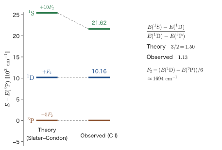
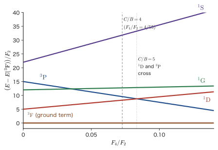
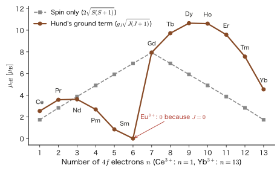

Chapter 34Many-Electron Atoms — Electron Configurations, Term Symbols, and Hund's Rules
Why does the periodic table repeat with the period lengths “2, 8, 8, 18, 18, 32, 32”? Why is the ground state of carbon the state in which the spins of the two 2p electrons are aligned parallel? Why do the five 3d electrons of $\mathrm{Fe^{3+}}$ have aligned spins and a large magnetic moment, and why does a crystal doped with the rare earth neodymium emit infrared laser light at 1064 nm? All of these are answers to the same problem: how to place several electrons in the orbitals of an atom. The hydrogen atom (Chapters 15–17) has only one electron, so the Schrödinger equation could be solved exactly; with two or more electrons, however, the Coulomb repulsion $1/r_{12}$ between the electrons enters and the equation cannot be solved exactly. For helium, we approximated this repulsion by perturbation theory (Chapter 29) and by the variational method (Chapter 31). In this chapter, we put the same idea into a form usable for atoms with any number of electrons.
The central point of the overview is to think of the electronic state of an atom in terms of a three-tier hierarchy, configuration → term → level (Figure 34.3). (1) First, regarding each electron as moving in the average electric field of the nucleus and the other electrons, we place electrons in the orbitals $1s,2s,2p,\dots$ (the electron configuration; the energy scale is a few eV to a few tens of eV). (2) Even within the same configuration, the finer part of the electron–electron repulsion splits the energy according to the relation between the orientations of the electrons (orbital angular momentum $L$ and spin $S$) (the term ${}^{2S+1}L$; the scale is about 0.1 to a few eV). (3) Finally, the spin–orbit interaction splits the terms still more finely according to the total angular momentum $J$ (the level ${}^{2S+1}L_J$; the scale is $10^{-3}$ to $10^{-1}$ eV). The rules that govern the respective tiers are the Madelung rule, the Slater–Condon rules, and the Landé interval rule, and the rules that determine the lowest term are Hund's rules. Classical physics has nothing corresponding to spin or the Pauli exclusion principle, so the root of these rules lies in quantum mechanics alone. On the other hand, an intuition such as “electrons orbiting in the same direction avoid one another” can be expressed in words close to the classical picture.
The content of this chapter is the starting point for most situations in materials science. The colors, magnetism, catalytic action, and battery-material properties of transition-metal ions are determined by the properties of the terms of the 3d electrons, and the properties of Nd–Fe–B magnets, laser crystals, and phosphors are determined by the properties of the terms of the 4f electrons of rare-earth ions. In the Hartree–Fock approximation of the next chapter, Chapter 35, we build the energies of the terms counted in this chapter from two kinds of integrals (the Coulomb integral $U_{ab}$ and the exchange integral $J_{ab}$). In ligand field theory in Part VIII, the Racah parameters $B$ and $C$ defined in this chapter become the vertical and horizontal axes of the Tanabe–Sugano diagram.
- To recast the many-electron atom, by the central-field approximation, as a “problem of placing electrons in orbitals,” and to explain the Madelung rule and the periodic table (2, 8, 8, 18, 18, 32, 32), exceptions such as Cr and Cu, the discussion of 4s and 3d that uses the results for $Z^*$ from Slater's rules in Chapter 18 (Cu: 3.70 for 4s and 7.85 for 3d), and the periodicity of the first ionization energy
- To understand the total orbital angular momentum $\hat{\bm{L}}=\sum\hat{\bm{l}}_i$, the total spin $\hat{\bm{S}}=\sum\hat{\bm{s}}_i$, the total angular momentum $\hat{\bm{J}}=\hat{\bm{L}}+\hat{\bm{S}}$, and LS coupling and the term symbols ${}^{2S+1}L_J$ ($J$ is distinct from the exchange integral $J_{ab}$)
- To count microstates (p$^2$: 15, d$^2$: 45, d$^3$: 120, d$^5$: 252) and to decompose them into terms using the $M_L$–$M_S$ table
- To derive the splitting into $J$ levels by the spin–orbit interaction $\lambda\hat{\bm{L}}\cdot\hat{\bm{S}}$ and the Landé interval rule $E(J)-E(J-1)=\lambda J$, $\lambda=\pm\zeta/2S$
- To express the electron–electron repulsion in terms of the Slater integrals $F^k$, and to express the term energies of p$^2$ (in the ratio $-5,1,10$) and the term energies of d$^2$ in terms of the Racah parameters $A,B,C$
- To understand Hund's three rules and the list of ground terms (3d electrons: d$^1$–d$^9$; rare-earth ions: 4f$^1$–4f$^{13}$) together with their physical reasons
- To calculate the Landé $g_J$ and the effective magnetic moment $\mu_{\mathrm{eff}}$, and to apply them to the magnetism of 3d ions and rare-earth ions, Nd–Fe–B magnets, and the Nd:YAG laser
Source notes: This chapter supplements material that is not in the original notes. Related notes: Yasuhide Mochizuki, “Physics Notes: Quantum Mechanics 2,” pp. 53–60, and “Quantum Mechanics 3,” pp. 11–18 and pp. 50–56.
34.1 The Central-Field Approximation and Electron Configurations — The Aufbau Principle and the Periodic Table
34.1.1 The Hamiltonian of a many-electron atom
Consider an atom in which $N$ electrons surround a nucleus of atomic number $Z$ (charge $+Ze_0$). This book denotes the elementary charge by $e_0$ (the same quantity as $e$ in AD 03). We use the atomic units ($\hbar=m_{\mathrm e}=e_0=4\pi\varepsilon_0=1$; the unit of length is the Bohr radius $a_0$, and the unit of energy is the Hartree energy $E_{\mathrm h}=27.211\,386\ \mathrm{eV}$) introduced in the previous chapter (Chapter 33, Section 33.1), and we regard the nucleus as fixed (the Born–Oppenheimer approximation). The Hamiltonian is then
\begin{equation} \hat{H}=\sum_{i=1}^{N}\Bigl(-\frac12\nabla_i^2-\frac{Z}{r_i}\Bigr)+\sum_{i\lt j}\frac{1}{r_{ij}}\ ,\qquad r_{ij}=\abs{\bm{r}_i-\bm{r}_j} \label{eq:34-H} \end{equation}In SI units, the first term becomes $-\dfrac{\hbar^2}{2m_{\mathrm e}}\nabla_i^2-\dfrac{Ze_0^2}{4\pi\varepsilon_0r_i}$, and the second term becomes $\dfrac{e_0^2}{4\pi\varepsilon_0r_{ij}}$. The first term is “kinetic energy plus attraction to the nucleus,” which is the Hamiltonian of a separate hydrogen-like atom (Chapter 18) for each electron. The second term is the repulsion energy summed over every pair of two electrons, and there are $N(N-1)/2$ such pairs (for Fe, $26\times25/2=325$). Because of this two-electron term, the coordinate $\bm{r}_i$ of electron $i$ and the coordinate $\bm{r}_j$ of electron $j$ become intertwined, and the variables cannot be separated. Even for helium ($N=2$), the exact solution could not be written in terms of elementary functions (Chapters 29 and 31). An approximation is therefore necessary.
34.1.2 The central-field approximation — “each electron moves in an average electric field”
Instead of treating the repulsion term $1/r_{ij}$ as it stands, we consider that electron $i$ moves alone in the field of the nucleus and the average electric field created by the other electrons. The average charge distribution of the other electrons is nearly spherically symmetric for the atom as a whole, so the average electric field becomes a central force centered on the nucleus.
Definition 34.1: The central-field approximation
The potential felt by each electron is represented by a function $V(r)=-Z/r+u(r)$ that is spherically symmetric about the nucleus. Here $u(r)$ is the spherically symmetric average potential created by the other electrons (it represents the effect of shielding). The Hamiltonian in Eq. \eqref{eq:34-H} then splits as
\begin{equation} \hat{H}=\hat{H}_0+\hat{V}_{\mathrm{res}}\ ,\qquad \hat{H}_0=\sum_{i=1}^{N}\Bigl[-\frac12\nabla_i^2+V(r_i)\Bigr]\ ,\qquad \hat{V}_{\mathrm{res}}=\sum_{i\lt j}\frac{1}{r_{ij}}-\sum_{i=1}^{N}u(r_i) \label{eq:34-central} \end{equation}We take $\hat{H}_0$ as the unperturbed Hamiltonian, and the remainder $\hat{V}_{\mathrm{res}}$ (the residual electrostatic interaction) is assumed to be small and is treated as a perturbation.
This way of splitting is the same idea as splitting He into $\hat{H}_0+\lambda\hat{V}$ in Chapter 29. The difference is that in Chapter 29 we put only the attraction of the nucleus into $\hat{H}_0$ and made all of $1/r_{12}$ the perturbation, whereas here we absorb the shielding into $\hat{H}_0$ as $u(r)$ and leave only the “deviation from the average” as the perturbation. The concrete form of $u(r)$ is determined by Hartree's self-consistent field method (its completed form is the application of the Hartree–Fock method to atoms in Chapters 35–37). In this chapter we do not go into the detailed form of $u(r)$ and use only the fact that it is a central force. $V(r)$ takes the form $-Z/r$ very close to the nucleus (not shielded) and $-(Z-N+1)/r$ far from the nucleus ($-1/r$ for a neutral atom; seen from an outer electron, the nucleus and the other $N-1$ electrons nearly cancel each other).
Since $\hat{H}_0$ is a sum of one-electron Hamiltonians $\hat{h}=-\tfrac12\nabla^2+V(r)$, one for each electron, the variables can be separated. Since $V(r)$ is a central force, the eigenfunctions of $\hat{h}$ can be written, just as for the hydrogen-like atom (Chapter 14), as
\begin{equation} \psi_{nlm}(\bm{r})=R_{nl}(r)\,Y_l^{m}(\theta,\varphi)\ ,\qquad \hat{h}\,\psi_{nlm}=\varepsilon_{nl}\,\psi_{nlm} \label{eq:34-orb} \end{equation}The radial function $R_{nl}$ is determined by $V(r)$. There are two points to note. (1) For a central force, the orbital energy $\varepsilon_{nl}$ does not depend on the magnetic quantum number $m$, but since $V(r)$ is not of the form $-1/r$ (Coulomb type), the degeneracy of hydrogen, “determined by $n$ alone,” does not hold. The energy depends on $l$ as well. (2) Since the electron has spin, a one-electron state is a spin orbital: the product of a spatial orbital $\psi_{nlm}$ and a spin function ($\alpha=\ket{\uparrow}$, $\beta=\ket{\downarrow}$), namely $\chi=\psi_{nlm}\,\alpha$ or $\psi_{nlm}\,\beta$ (Chapter 33). The Slater determinant built from $N$ spin orbitals is an eigenfunction of $\hat{H}_0$, and its eigenvalue is the sum of the orbital energies, $\sum\varepsilon_{n_il_i}$.
Intuition: The reason the $l$ degeneracy is lifted is “penetration”
In hydrogen, the energies of $2s$ and $2p$ were the same ($-13.6\ \mathrm{eV}/4$). In a many-electron atom, however, $\varepsilon_{2s}\lt\varepsilon_{2p}$. The $2s$ orbital reaches in close to the nucleus (penetration), so it is less subject to shielding by the inner electrons, and its effective nuclear charge is large. The $2p$ orbital has its peak at a position somewhat away from the nucleus, so it is shielded by the inner electrons and its effective nuclear charge is small. For the same $n$, the energy is lower in the order of greater penetration ($s\gt p\gt d\gt f$): $\varepsilon_{ns}\lt\varepsilon_{np}\lt\varepsilon_{nd}\lt\varepsilon_{nf}$. A detailed discussion of shielding and penetration is given in Chapter 18, Section 18.2 and Section 18.3.
Related simulator: The hydrogen atom (orbital shapes and radial distribution functions)
Here we define the electron configuration. It is a statement of how many electrons are placed in each subshell $nl$, written as in $1s^22s^22p^2$ (carbon). Under $\hat{H}_0$, all the states of the same configuration are degenerate. The configuration is the coarsest classification of the electronic states of an atom.
Caution: The sum of the orbital energies is not the total energy of the atom
$\sum_i\varepsilon_{n_il_i}$ counts the average repulsion $u(r_i)$ felt by electron $i$ both in the energy of electron $i$ and in the energy of electron $j$, so it counts the electron–electron repulsion twice. The total energy of the atom is not $\sum\varepsilon$. The correction for this double counting is dealt with in the treatment of the energy in the Hartree–Fock method (Chapter 35).
34.1.3 The Pauli exclusion principle and the capacity of subshells
As we saw in Chapter 33, the Pauli exclusion principle is equivalent to the statement that the many-electron wave function is antisymmetric under the exchange of electrons, and therefore that no two electrons can occupy the same spin orbital. Since a spin orbital is specified by the set $(n,l,m,m_s)$, a subshell $nl$ can hold two electrons, one spin up and one spin down, in each of the $2l+1$ spatial orbitals with $m=-l,\dots,l$, for a total of $2(2l+1)$ electrons. The capacity of the shell with principal quantum number $n$ ($l=0,1,\dots,n-1$) is
\begin{equation} \sum_{l=0}^{n-1}2(2l+1)=2\cdot n^2=2n^2 \label{eq:34-shell} \end{equation}($\sum_{l=0}^{n-1}(2l+1)=n^2$ is the sum of an arithmetic series).
| Subshell | $s$ | $p$ | $d$ | $f$ | Shell capacity $2n^2$ |
|---|---|---|---|---|---|
| $l$ | 0 | 1 | 2 | 3 | 2, 8, 18, 32 for $n=1,2,3,4$ |
| Number of spatial orbitals $2l+1$ | 1 | 3 | 5 | 7 | |
| Capacity $2(2l+1)$ | 2 | 6 | 10 | 14 |
This $2n^2$ (2, 8, 18, 32) is related to the lengths of the periods of the periodic table, 2, 8, 8, 18, 18, 32, 32, but does not coincide with them. For example, the third period has 8 elements, not the 18 of the $n=3$ shell. As we will see in the next subsection, this is because the order of the orbital energies is not determined by $n$ alone.
34.1.4 The Aufbau principle and the Madelung rule
The electron configuration of the ground state is determined by filling in the electrons in order, starting from the lowest-energy orbitals, while obeying the Pauli exclusion principle. This is called the Aufbau principle. The order of filling is the order of the orbital energies $\varepsilon_{nl}$, but $\varepsilon_{nl}$ differs slightly from atom to atom. For the ground-state configurations of neutral atoms, however, the following simple empirical law holds well for most elements.
Law 34.1: The Madelung rule
Arrange the subshells (1) in order of increasing value of $n+l$ and (2) for the same $n+l$, in order of increasing $n$, and fill in the electrons in this order.
\begin{equation} 1s\to2s\to2p\to3s\to3p\to4s\to3d\to4p\to5s\to4d\to5p\to6s\to4f\to5d\to6p\to7s\to5f\to6d\to7p\to\cdots \label{eq:34-madelung} \end{equation}This empirical law is also called the “$n+l$ rule,” and, after Madelung and Klechkowski, the Madelung–Klechkowski rule. It is not a law derived exactly from theory but a rule obtained from measurements on many elements. For example, it reproduces the fact that $4s$ ($n+l=4$) is filled before $3d$ ($n+l=5$), and that $5s$ ($n+l=5$, $n=5$) is filled before $4d$ ($n+l=6$). The numbers of electrons in the groups with the same $n+l$ are $2,2,8,8,18,18,32,32$ (the right-hand column of Figure 34.1), and counting from the second group, they form the same sequence as the lengths of the periods of the periodic table, $2,8,8,18,18,32,32$. However, the breaks between groups fall at $ns^2$ (Be, Mg, Ca, Sr, Ba, Ra), which lies two electrons beyond the breaks between periods (the noble gases).
Example 34.1: Ground-state configurations by the Madelung rule
Determine the ground-state configurations of Fe ($Z=26$), As ($Z=33$), and Zr ($Z=40$) by the Madelung rule. Also compare the result of applying the same rule to Gd ($Z=64$) with the measured configuration.
Solution. We fill the orbitals in the order of Eq. \eqref{eq:34-madelung}, subtracting the capacities ($s$: 2, $p$: 6, $d$: 10, $f$: 14) as we go. The running totals are $1s^2$ (2), $2s^2$ (4), $2p^6$ (10), $3s^2$ (12), $3p^6$ (18), $4s^2$ (20), $3d^{10}$ (30), $4p^6$ (36), $5s^2$ (38), $4d^{10}$ (48), $5p^6$ (54), $6s^2$ (56), $4f^{14}$ (70), …
Fe: $26-18=8$ electrons lie outside [Ar]. The $4s^2$ takes us up to 20, and the remaining $26-20=6$ electrons go into $3d$: $[\mathrm{Ar}]3d^64s^2$.
As: $33-18=15$ electrons. The $4s^2$ takes two electrons, $3d^{10}$ takes ten, and the remaining $3$ electrons go into $4p$: $[\mathrm{Ar}]3d^{10}4s^24p^3$.
Zr: $40-36=4$ electrons lie outside [Kr]. The $5s^2$ takes us up to 38, and the remaining $2$ electrons go into $4d$: $[\mathrm{Kr}]4d^25s^2$.
Gd: $[\mathrm{Xe}]$ (54 electrons) + $6s^2$ (56) + $64-56=8$ electrons in $4f$, so the rule would give $[\mathrm{Xe}]4f^86s^2$. The measured configuration is $[\mathrm{Xe}]4f^75d^16s^2$: the $4f$ subshell stops at half filling (seven electrons), and one electron goes into $5d$. The rule is an empirical law that “holds for most elements,” and Gd is one of the exceptions (next subsection).
Table 34.2 lists the ground-state configurations and ground terms of the atoms with $Z=1$ through $36$ (the term symbols are explained in the next section and in Section 34.6).
| $Z$ | Element | Ground-state configuration | Ground term | $Z$ | Element | Ground-state configuration | Ground term |
|---|---|---|---|---|---|---|---|
| 1 | H | 1s | 2S1/2 | 19 | K | [Ar]4s | 2S1/2 |
| 2 | He | 1s2 | 1S0 | 20 | Ca | [Ar]4s2 | 1S0 |
| 3 | Li | [He]2s | 2S1/2 | 21 | Sc | [Ar]3d4s2 | 2D3/2 |
| 4 | Be | [He]2s2 | 1S0 | 22 | Ti | [Ar]3d24s2 | 3F2 |
| 5 | B | [He]2s22p | 2P1/2 | 23 | V | [Ar]3d34s2 | 4F3/2 |
| 6 | C | [He]2s22p2 | 3P0 | 24 | Cr | [Ar]3d54s | 7S3 |
| 7 | N | [He]2s22p3 | 4S3/2 | 25 | Mn | [Ar]3d54s2 | 6S5/2 |
| 8 | O | [He]2s22p4 | 3P2 | 26 | Fe | [Ar]3d64s2 | 5D4 |
| 9 | F | [He]2s22p5 | 2P3/2 | 27 | Co | [Ar]3d74s2 | 4F9/2 |
| 10 | Ne | [He]2s22p6 | 1S0 | 28 | Ni | [Ar]3d84s2 | 3F4 |
| 11 | Na | [Ne]3s | 2S1/2 | 29 | Cu | [Ar]3d104s | 2S1/2 |
| 12 | Mg | [Ne]3s2 | 1S0 | 30 | Zn | [Ar]3d104s2 | 1S0 |
| 13 | Al | [Ne]3s23p | 2P1/2 | 31 | Ga | [Ar]3d104s24p | 2P1/2 |
| 14 | Si | [Ne]3s23p2 | 3P0 | 32 | Ge | [Ar]3d104s24p2 | 3P0 |
| 15 | P | [Ne]3s23p3 | 4S3/2 | 33 | As | [Ar]3d104s24p3 | 4S3/2 |
| 16 | S | [Ne]3s23p4 | 3P2 | 34 | Se | [Ar]3d104s24p4 | 3P2 |
| 17 | Cl | [Ne]3s23p5 | 2P3/2 | 35 | Br | [Ar]3d104s24p5 | 2P3/2 |
| 18 | Ar | [Ne]3s23p6 | 1S0 | 36 | Kr | [Ar]3d104s24p6 | 1S0 |
Caution: The Madelung rule is not an “order of orbital energies”
Do not confuse the order in which electrons are filled ($4s$ before $3d$) with the order of orbital energies. In the transition metals from Sc onward, the orbital energy of $3d$ is the lower one (Chapter 18, Section 18.5). Even so, the ground-state configuration of the neutral atom is $3d^n4s^2$, because the repulsion among $3d$ electrons is strong (3d is concentrated close to the nucleus), so that in terms of the total energy it can pay to place electrons in $4s$. The Madelung rule is an empirical summary of the configuration that minimizes the total energy of the ground state.
34.1.5 Exceptions — Cr and Cu, and the 4d, 5d, and 4f elements
In Table 34.2, Cr and Cu have $3d^54s^1$ and $3d^{10}4s^1$, which differ from the predictions of the Madelung rule ($3d^44s^2$, $3d^94s^2$). Others include Nb ($4d^45s^1$), Mo ($4d^55s^1$), Ru ($4d^75s^1$), Rh ($4d^85s^1$), Pd ($4d^{10}$, with $5s$ empty), Ag ($4d^{10}5s^1$), La ($5d^16s^2$), Ce ($4f^15d^16s^2$), Gd ($4f^75d^16s^2$), Pt ($5d^96s^1$), and Au ($5d^{10}6s^1$).
Exceptions occur because the orbital energies of $nd$ (or $4f$) and $(n+1)s$ are close, so that a slight energy difference can interchange them. For example, in Cr the lowest term of the $3d^44s^2$ configuration lies only about 1 eV above the ground term of $3d^54s^1$. The following two effects then come into play.
- Exchange energy: The more pairs of electrons with parallel spins there are, the more the repulsion is reduced by the Fermi hole (Chapter 33, Section 33.6, Chapter 29, Section 29.5). A half-filled $d^5$ (the spins of all five electrons parallel) and a filled $d^{10}$ have many parallel pairs.
- Being able to avoid the repulsion within the $4s^2$ electron pair.
The next example shows a simple “bookkeeping” that counts the number of parallel-spin pairs. Note that this is only a rough guide to the reason for the exceptions, not an accurate energy calculation. That neighboring elements such as Ni ($3d^84s^2$) and Cu give different results is a consequence of such competition between small energies.
Example 34.2: Counting parallel-spin pairs — the exceptions Cr and Cu, and N and O
(1) For $3d^54s^1$ and $3d^44s^2$ of Cr, compare the numbers of $3d$–$3d$ parallel-spin pairs. Similarly, compare $3d^{10}4s^1$ and $3d^94s^2$ of Cu. (2) For 2p$^3$ (N) and 2p$^4$ (O), count the parallel-spin pairs, and state which of N$\to$N$^+$ and O$\to$O$^+$ loses more exchange energy. Assume, however, that the spins are aligned in parallel as far as possible, following Hund's rules.
Solution. The number of ways to choose two electrons from $n_\uparrow$ electrons with parallel spins is $\binom{n_\uparrow}{2}=n_\uparrow(n_\uparrow-1)/2$.
(1) Cr: $3d^5$ has five spin-up electrons, giving $\binom52=10$ pairs. $3d^4$ has four spin-up electrons, giving $\binom42=6$ pairs. The difference is $4$ pairs. Cu: $3d^{10}$ has five spin-up and five spin-down electrons, giving $10+10=20$ pairs, and $3d^9$ has five spin-up and four spin-down electrons, giving $10+6=16$ pairs. The difference is again $4$ pairs. In both exceptions, moving one electron from $4s$ to $3d$ increases the number of $3d$–$3d$ parallel-spin pairs by four. The $3d$ orbital is small, and the exchange integral $J$ between $3d$ electrons is large (larger than that between $4s$ and $3d$), so this increase exceeds the (small) energy required for the promotion $4s\to3d$.
(2) N ($2p^3$) has three spin-up electrons, giving $\binom32=3$ pairs. N$^+$ ($2p^2$) has $\binom22=1$ pair. N loses two pairs. O ($2p^4$) has three spin-up electrons and one spin-down electron, giving $\binom32+\binom12=3+0=3$ pairs. O$^+$ ($2p^3$) has three pairs. O loses no parallel pair at all. Furthermore, in O two electrons occupy a single $p$ orbital (an electron pair), so there is a repulsion within the same orbital (the quantity we will denote $U_{aa}$ in a later equation), and ionization removes this extra repulsion. Therefore N loses the exchange energy of two pairs on ionization, more than O does, which works in the direction of a larger ionization energy. This is one of the causes of N (14.53 eV) > O (13.62 eV) (Section 34.5 makes this estimate quantitative).
34.1.6 4s and 3d as seen through the $Z^*$ of Chapter 18
Slater's rules, which estimate shielding by addition, were stated in Chapter 18, Section 18.4, Law 18.1 (for a worked calculation see Example 18.8; for the discussion of the order of 4s and 3d see Section 18.5.3). In this section we use only their conclusion. That is, the $3d$ electrons lie inside the atom and have a large effective nuclear charge (Fe: $6.25$ for $3d$ and $3.75$ for $4s$; Cu: $7.85$ for $3d$ and $3.70$ for $4s$), while the $4s$ electrons form the outer edge of the atom. Let us connect this $Z^*$ to the discussion of electron configurations.
Example 34.3: The ground-state configuration of Cu and Cu$^+$ — combining $Z^*$ and parallel-spin pairs
From the $Z^*$ of Cu in Example 18.8 ($3d$: $7.85$; $4s$: $3.70$) and the effective principal quantum numbers $n^*$ ($3d$: $3$; $4s$: $3.7$), estimate the orbital energies of $3d$ and $4s$ with the hydrogen-like formula $E\approx-13.606\ \mathrm{eV}\times(Z^*/n^*)^2$. Using the result and the counting of parallel-spin pairs in Example 34.2, explain (1) why the configuration of Cu$^+$ is $3d^{10}$, and (2) why the ground-state configuration of neutral Cu is $3d^{10}4s^1$ rather than the $3d^94s^2$ predicted by the Madelung rule.
Solution. $3d$: from $(7.85/3)^2=6.847$ we get $E_{3d}\approx-13.606\times6.847=-93.2\ \mathrm{eV}$. $4s$: from $(3.70/3.7)^2=1.000$ we get $E_{4s}\approx-13.6\ \mathrm{eV}$. The $3d$ level is far deeper. However, these values are only a rough guide for comparing the difference in $Z^*$, and they are not actual binding energies (the first ionization energy of Cu is $7.73\ \mathrm{eV}$).
(1) The orbital energies satisfy $3d\ll4s$: the $4s$ electron lies farther out and is shallower. Therefore, when one electron is removed from neutral Cu, the $4s$ electron comes off first, and Cu$^+$ becomes $3d^{10}$ (moreover, $3d^{10}$ is a closed shell and is stable). This is why we may speak of transition-metal ions in terms of “$3d^n$.” The same holds for Fe: $\mathrm{Fe^{2+}}$ is $3d^6$ and $\mathrm{Fe^{3+}}$ is $3d^5$.
(2) What determines the ground-state configuration is not the magnitude of the orbital energies but the total energy (the Caution in Section 34.1.4). As we saw in Example 34.2, moving one electron from $4s$ to $3d$, so that $3d^94s^2\to3d^{10}4s^1$, increases the number of $3d$–$3d$ parallel-spin pairs from $16$ to $20$, that is, by $4$ pairs. In addition, the repulsion within the $4s^2$ electron pair disappears. The $3d$ orbital is small (this corresponds to the large value $Z^*=7.85$ in Example 18.8), and the exchange integral between $3d$ electrons is large, so this gain exceeds the small energy required for the promotion from $3d^94s^2$. Experimentally as well, the lowest term of the $3d^94s^2$ configuration of Cu, ${}^2\mathrm{D}_{5/2}$, lies about $1.4\ \mathrm{eV}$ ($11\,203\ \mathrm{cm^{-1}}$) above the ground term ${}^2\mathrm{S}_{1/2}$ ($3d^{10}4s^1$) (NIST). However, this is a guide to the reason, not a calculation of the total energy.
That the $4s$ electron is lost first in transition-metal ions can also be seen from the $Z^*$ estimate above. In addition, an ion has fewer electrons, so the repulsion among $3d$ electrons weakens and the $3d$ orbital contracts and becomes deeper, and the $3d^n$ configuration becomes the lowest ($\mathrm{Fe^{+}}$ has the ground-state configuration $3d^64s^1$, and $\mathrm{Fe^{2+}}$ has $3d^6$). Similarly, $\mathrm{Cu^+}$: $3d^{10}$, $\mathrm{Cu^{2+}}$: $3d^9$, and $\mathrm{Zn^{2+}}$: $3d^{10}$. How $Z^*$ increases with the atomic number is shown in Figure 18.8. The ligand field theory of Part VIII starts from this $3d^n$ configuration.
34.1.7 Periodicity of the first ionization energy
The energy required to remove the shallowest electron from an atom in its ground state is the first ionization energy. Figure 34.2 shows the measured values (NIST) for $Z=1$ through $36$. Not only do the properties of elements in the same group of the periodic table line up, but there are also regular ups and downs within each period.
![First ionization energies for atomic numbers 1 to 36. The maximum in each period is at the noble gas at its end (He 24.6 eV, Ne 21.6 eV, Ar 15.8 eV, Kr 14.0 eV), and the minimum is at the alkali metals (Li 5.39 eV, Na 5.14 eV, K 4.34 eV). In the second period the energy decreases from Be to B and from N to O, and in the third period from Mg to Al and from P to S. For the 3d transition metals from Sc to Cu it lies in a narrow range from 6.6 eV to 7.9 eV; it rises to 9.39 eV at Zn and falls to 6.00 eV at Ga.](figs/ch34_fig34-2.svg)
We can explain the reasons for these ups and downs with the tools we have so far.
- The overall increase across a period, with the maximum at the noble gases and the minimum at the alkali metals. Each time one electron is added to the same shell, the nuclear charge increases by $+1$, while the shielding by the other electrons of the same shell increases by only about $0.35$, so $Z^*$ increases by about $0.65$ each time (Chapter 18, Section 18.4.4), the orbital contracts, and the binding becomes stronger. In the element that follows a closed-shell noble gas (Li, Na, K), the single outermost electron enters a new shell outside the inner closed shells (which shield $Z^*$ down to almost 1), so it is the most weakly bound (Li: $5.39\ \mathrm{eV}$, Na: $5.14\ \mathrm{eV}$, K: $4.34\ \mathrm{eV}$). He ($24.59\ \mathrm{eV}$) has the maximum because the $1s$ electron is not shielded by any inner shell and feels $Z^*\approx1.7$.
- The Be$\to$B decrease ($9.32\to8.30\ \mathrm{eV}$). The outermost electron of B is a $2p$ electron, which penetrates the inside of $2s^2$ only poorly ($\varepsilon_{2p}\gt\varepsilon_{2s}$) and is, moreover, shielded by $2s^2$. For this reason, even though the nuclear charge is larger by one, the $2p$ electron is more weakly bound than the $2s$ electron of Be. Mg$\to$Al ($7.65\to5.99\ \mathrm{eV}$) and Zn$\to$Ga ($9.39\to6.00\ \mathrm{eV}$) have the same cause.
- The N$\to$O decrease ($14.53\to13.62\ \mathrm{eV}$). N is $2p^3$, with its three electrons in separate orbitals with their spins aligned (Hund's rules; three parallel pairs). The fourth electron of O enters an orbital that already holds one electron, with the opposite spin, and suffers the extra repulsion within the same orbital. When that electron is removed from O, the repulsion is merely reduced and no exchange energy is lost. In N$\to$N$^+$, two parallel pairs are lost (Example 34.2). For this reason, an electron is harder to remove from N. P$\to$S ($10.49\to10.36\ \mathrm{eV}$) is the same.
- A slow change, $6.6\to7.9\ \mathrm{eV}$, across the $3d$ series (Sc–Cu) (Sc: $6.56$, Ti: $6.83$, V: $6.75$, Cr: $6.77$, Mn: $7.43$, Fe: $7.90$, Co: $7.88$, Ni: $7.64$, Cu: $7.73\ \mathrm{eV}$). Because the electrons enter the $3d$ subshell, which lies inside $4s$, the shielding of the $4s$ electron increases by $0.85$ per $3d$ electron (Slater's rules). Of the nuclear charge $+1$, only $0.15$ is added to $Z^*$. As a result, the strength of the binding of the $4s$ electron hardly changes. In Zn ($3d^{10}4s^2$), both $3d$ and $4s$ are closed shells, and the value is high, $9.39\ \mathrm{eV}$.
In particular, the irregularity from N$\to$O is estimated quantitatively in Section 34.5 using the two-electron integral $F^2$ (Example 34.11).
Application: Ionization energy, the electronegativity of materials, and battery electrodes
The alkali metals (Li, Na, K), whose first ionization energies are small, release electrons easily, and they serve as the negative electrode of batteries (Li) and as the light source in flame tests. The electronegativity (Mulliken) obtained from the ionization energy and the electron affinity determines the ionic character of bonds in oxides and halides. Discussions such as how the position of the band center of transition-metal oxides shifts in the order Fe, Co, Ni, Mn, and how to estimate the voltage of the positive electrode of a Li-ion battery, start from this series of ionization energies of the 3d electrons (for discussions of solids, see AD 06, Contents (in Japanese)).
34.2 Names of Electronic States — LS Coupling and Term Symbols ${}^{2S+1}L_J$
34.2.1 An electron configuration alone is not enough — configuration → term → level
The electron configuration of the previous section is the coarsest classification of the states of an atom. For example, the ground-state configuration of carbon, $1s^22s^22p^2$, contains many ways of placing the two $2p$ electrons (the two $2p$ electrons can be placed in 15 ways; Section 34.3), and in the central-field approximation all of them have the same energy. In the real carbon atom, however, they split into three groups of different energies, and the lowest group is further split into three lines (Figure 34.3). What governs this splitting is (1) the deviation of the electron–electron repulsion from its average, $\hat{V}_{\mathrm{res}}$ (Eq. \eqref{eq:34-central}), and (2) the spin–orbit interaction (Chapter 26).
Let us organize these three tiers in descending order of energy scale.
- Electron configuration (energy of the central field, a few eV to a few tens of eV): which subshell holds how many electrons.
- Term (splitting due to electron–electron repulsion, about 0.1 eV to a few eV): determined by the total orbital angular momentum $L$ and the total spin $S$. Symbol ${}^{2S+1}L$.
- Level (splitting due to the spin–orbit interaction, $10^{-3}$ to $10^{-1}$ eV): determined by the total angular momentum $J$. Symbol ${}^{2S+1}L_J$.
The tiers separate because the energy scales differ greatly. Starting from the largest interaction, we classify the states by “the quantities conserved under that interaction,” and the smaller interactions can be added afterwards as perturbations (degenerate perturbation theory; Chapter 28).
34.2.2 Total orbital angular momentum and total spin — $L$ and $S$ are conserved
Why do the combined $L,S$, rather than the individual $l_i,s_i$ of each electron, have meaning? Within a configuration, the orbital angular momentum $\hat{\bm{l}}_i$ of electron $i$ is conserved under the central force $V(r_i)$ (Chapter 22). However, the electron–electron repulsion $1/r_{ij}$ is determined by the relative position $\bm{r}_i-\bm{r}_j$ of two electrons, so it changes if we rotate only electron $i$, and $\hat{\bm{l}}_i$ is not conserved. On the other hand, if we rotate all the electrons together about the $z$ axis, $r_{ij}$ does not change. That is, $\hat{V}_{\mathrm{res}}$ is invariant under rotation of the electrons as a whole. Therefore, the Hamiltonian commutes with the following operators.
\begin{equation} \hat{\bm{L}}=\sum_{i=1}^{N}\hat{\bm{l}}_i\ ,\qquad \hat{\bm{S}}=\sum_{i=1}^{N}\hat{\bm{s}}_i\ ,\qquad \hat{\bm{J}}=\hat{\bm{L}}+\hat{\bm{S}} \label{eq:34-LSJ} \end{equation}Since the electron–electron repulsion does not depend on spin, the Hamiltonian commutes with $\hat{\bm{S}}$, and since it is invariant under rotation of the whole, it commutes with $\hat{\bm{L}}$ ($[\hat{H},\hat{\bm{L}}]=[\hat{H},\hat{\bm{S}}]=\bm{0}$). Because the operators of different electrons commute with one another, the combined $\hat{\bm{L}}$ and $\hat{\bm{S}}$ also satisfy the same commutation relations as the angular momentum of one electron (Chapter 25), and the eigenvalues of $\hat{L}^2,\hat{L}_z,\hat{S}^2,\hat{S}_z$ are $L(L+1)\hbar^2,M_L\hbar,S(S+1)\hbar^2,M_S\hbar$, with $M_L=-L,\dots,L$ and $M_S=-S,\dots,S$.
Definition 34.2: Term and LS coupling
The eigenstates of the Hamiltonian that takes only the electron–electron repulsion into account are classified by the quantum numbers $(L,S)$, and the $(2L+1)(2S+1)$ states with the same $(L,S)$ (differing in $M_L,M_S$) have the same energy. This set of degenerate states is called a term, and it is denoted by the term symbol:
\begin{equation} {}^{2S+1}L\qquad(L=0,1,2,3,4,5,6,\dots\ \text{are denoted}\ \mathrm{S,P,D,F,G,H,I,\dots}\ \text{respectively}) \label{eq:34-term} \end{equation}The $2S+1$ at the upper left is called the multiplicity. The approximation in which the spin–orbit interaction is treated as a perturbation inside this term is called LS coupling (Russell–Saunders coupling).
The uppercase $S,P,D,F,G,H,I$ are the same letters as the one-electron subshell letters $s,p,d,f$ ($l=0,1,2,3$), capitalized. The letters for $L=7$ onward continue as $\mathrm{K,L,M,\dots}$ ($\mathrm{J}$ is not used because it is easily confused with the total angular momentum $J$). The multiplicities $2S+1=1,2,3,4,5,\dots$ corresponding to $S=0,\tfrac12,1,\tfrac32,2,\dots$ are called singlet, doublet, triplet, quartet, quintet, and so on.
Caution: The total angular momentum $J$ and the exchange integral $J_{ab}$ are different things
The $J$ (uppercase, with no subscript) used in this chapter is the quantum number of the total angular momentum $\hat{\bm{J}}=\hat{\bm{L}}+\hat{\bm{S}}$. On the other hand, $J_{ab}$ (with two subscripts) in Chapters 29 and 35 is the exchange integral (a companion of the Coulomb integral $U_{ab}$), a quantity with the dimension of energy. In the companion volume (Szabo–Ostlund, AD 07), the Coulomb integral is written $J$ and the exchange integral $K$, so it also differs in meaning from that $J$. Even when the letter is the same, distinguish them by the presence or absence of subscripts and by context.
34.2.3 LS coupling and jj coupling — which is correct depends on the atom
LS coupling is a good approximation when the splitting due to electron–electron repulsion is larger than the splitting due to the spin–orbit interaction. The spin–orbit interaction grows rapidly with atomic number (as $Z^4$ in hydrogen-like atoms; Chapter 26, Section 26.2), and in heavy atoms it becomes comparable to or larger than the electron–electron repulsion. In this limit it is better to first form $\hat{\bm{j}}_i=\hat{\bm{l}}_i+\hat{\bm{s}}_i$ for each electron and then combine these to form $J$. This is called jj coupling. Real atoms lie between these two limits.
| Atom | Configuration | Width of the $J$ splitting of ${}^3\mathrm{P}$ | Interval between ${}^1\mathrm{D}$ and ${}^3\mathrm{P}$ | Ratio |
|---|---|---|---|---|
| C | $2p^2$ | 43.4 ($J=0\to2$) | 10 193 | 0.004 |
| O | $2p^4$ | 227.0 ($J=2\to0$) | 15 868 | 0.014 |
| Pb | $6p^2$ | 10 650 ($J=0\to2$) | 21 458 | 0.50 |
Example 34.4: Atoms for which LS coupling is a good approximation and atoms for which it is not
For the three atoms in Table 34.3, calculate the ratio of the width of the splitting of the ${}^3\mathrm{P}$ levels to the interval up to ${}^1\mathrm{D}$, and state whether LS coupling is a good approximation. Furthermore, if LS coupling holds, the ratio of the intervals among ${}^3\mathrm{P}_0,{}^3\mathrm{P}_1,{}^3\mathrm{P}_2$ should be $1:2$, but what do the measured values show (C: $0,16.4,43.4$; Pb: $0,7819,10650\ \mathrm{cm^{-1}}$)?
Solution. C: $43.4/10\,193=0.0043$. O: $227.0/15\,868=0.0143$. Pb: $10\,650/21\,458=0.496$. For C and O, the splitting due to the spin–orbit interaction is only 0.4% and 1.4% of the term interval, so LS coupling is very good. For Pb the ratio reaches about 50%, and LS coupling does not hold (it is intermediate coupling, in fact closer to jj coupling).
The ratio of the intervals (the interval between $J=2$ and $1$ relative to the interval between $J=1$ and $0$) is $(43.4-16.4)/16.4=27.0/16.4=1.64$ for C and $(10\,650-7819)/7819=2831/7819=0.36$ for Pb. The LS-coupling prediction (the Landé interval rule in the next section) is $2$. C is close to the prediction (1.64; the remainder is due to a slight mixing with ${}^1\mathrm{D}_2$, which has the same $J=2$ as ${}^3\mathrm{P}_2$), but Pb deviates greatly from the prediction. In heavy atoms, LS-coupling term symbols retain meaning only as names for classifying the levels.
In 3d transition metals, the coupling constant of the spin–orbit interaction, $\zeta_{3d}$, is a few hundred $\mathrm{cm^{-1}}$ (0.02–0.1 eV), which is more than one order of magnitude smaller than the term interval (about $10^4\ \mathrm{cm^{-1}}$), so LS coupling holds well. In 4f rare-earth ions, $\zeta_{4f}\sim10^3\ \mathrm{cm^{-1}}$ is large, but the term intervals are larger still, and LS-coupling term symbols are still widely used (Section 34.7). In this chapter, we use LS coupling.
34.2.4 How to read a term symbol, and the values of $J$
When the spin–orbit interaction is present, the $(2L+1)(2S+1)$ states of a term ${}^{2S+1}L$ are classified by the quantum number $J$ of $\hat{\bm{J}}=\hat{\bm{L}}+\hat{\bm{S}}$ (the addition of angular momenta in Chapter 25). The possible values of $J$ are
\begin{equation} J=\abs{L-S},\ \abs{L-S}+1,\ \dots,\ L+S \label{eq:34-Jvalues} \end{equation}and there are $2S+1$ of them (the same number as the multiplicity) when $L\ge S$, and $2L+1$ of them when $L\lt S$. The degeneracy of each $J$ level is $2J+1$ ($M_J=-J,\dots,J$), and the total is $\sum_J(2J+1)=(2L+1)(2S+1)$. We use the symbol ${}^{2S+1}L_J$, which includes the level. For example, ${}^3\mathrm{P}_2$ is read as “triplet P with $J=2$.”
Example 34.5: The $J$ levels of a term and their degeneracies
(1) Find the values of $J$ for ${}^3\mathrm{F}$ and the degeneracy of each level, and verify that the total is $(2L+1)(2S+1)$. (2) Do the same for ${}^4\mathrm{D}$. (3) How many values of $J$ does ${}^6\mathrm{S}$ (the ground term of $\mathrm{Mn^{2+}}$ and $\mathrm{Fe^{3+}}$) have?
Solution. (1) ${}^3\mathrm{F}$ has $S=1$, $L=3$. $J=|3-1|,\dots,3+1=2,3,4$. The degeneracies are $2J+1=5,7,9$. The total is $5+7+9=21=(2\cdot3+1)(2\cdot1+1)=7\times3$. (2) ${}^4\mathrm{D}$ has $S=\tfrac32$, $L=2$. $J=\tfrac12,\tfrac32,\tfrac52,\tfrac72$. The degeneracies are $2,4,6,8$. The total is $20=5\times4$. (3) ${}^6\mathrm{S}$ has $S=\tfrac52$, $L=0$. Since $L\lt S$, $J=\abs{0-\tfrac52},\dots,0+\tfrac52$ gives only one value, $J=\tfrac52$. The degeneracy is $2J+1=6=(2\cdot0+1)(2\cdot\tfrac52+1)$. This is a single level, ${}^6\mathrm{S}_{5/2}$, and no splitting due to the spin–orbit interaction occurs in first order.
You will also see term symbols with a $\circ$ mark at the upper right (for example, the ground term of nitrogen, ${}^4\mathrm{S}^\circ_{3/2}$). This indicates that the parity of the electron configuration (whether the wave function changes sign under the inversion $\bm{r}\to-\bm{r}$) is odd, and it is attached when $\sum_il_i$ is odd. Electric dipole transitions in which the parity does not change (transitions within the same configuration, such as d–d transitions) are forbidden (the Laporte rule; Part VIII, Chapter 48). The transitions between levels within a configuration that we treat in this chapter are such forbidden transitions, with long lifetimes and weak absorption.
34.2.5 Closed shells and empty shells — only the open shell needs to be considered
In a completely filled subshell (closed shell), each orbital with $m_l=-l,\dots,l$ holds one spin-up and one spin-down electron, so there is only a single state with $M_L=\sum m_l=0$, $M_S=\sum m_s=0$, and it is the ${}^1\mathrm{S}_0$ state with $L=0$, $S=0$. Therefore, the electrons of a closed shell do not affect the classification of terms, and we need to consider only the electrons of the open shell (a partially filled subshell). For carbon we consider the terms of $2p^2$, for the iron ion $\mathrm{Fe^{3+}}$ those of $3d^5$, and for the neodymium ion $\mathrm{Nd^{3+}}$ those of $4f^3$. Also, the ground term of closed-shell atoms and ions such as Ne, Ar, Zn, and $\mathrm{Zn^{2+}}$ is always ${}^1\mathrm{S}_0$. Similarly, the state of a single electron is a term with $L=l$, $S=\tfrac12$, such as ${}^2\mathrm{S}_{1/2}$ ($1s$) of hydrogen or ${}^2\mathrm{D}$ of $\mathrm{Ti^{3+}}$ ($3d^1$).
Relation to the companion volumes
The way of writing term symbols was also treated in the companion volume “Computational Materials Science (AD 05)” (Chapter 7, Section 7.9). There, starting from the $2p^2$ configuration of carbon, we derived the singlets and triplets. In this chapter we add a counting method that works for any configuration (Section 34.3) and the way to determine the term energies (Section 34.5).
34.3 Counting Microstates — The $M_L$–$M_S$ Table
34.3.1 Microstates — counting the “ways of placing the electrons” within a configuration
A single electron configuration admits many ways of placing the electrons that satisfy the Pauli exclusion principle. Because electrons are indistinguishable from one another, we distinguish the ways of placing them not by “which electron goes into which orbital” but by “which spin orbitals are occupied.” Each way of placing the electrons corresponds to one Slater determinant (Chapter 33).
Definition 34.3: Microstate
For a given electron configuration, each choice of a set of occupied spin orbitals $(m_l,m_s)$ is called a microstate. For a configuration with $N$ electrons in a subshell $l$ (equivalent electrons: electrons occupying the same $nl$), the number of microstates is the number of ways of choosing $N$ of the $2(2l+1)$ spin orbitals, namely
\begin{equation} \binom{2(2l+1)}{N}=\frac{[2(2l+1)]!}{N!\,[2(2l+1)-N]!} \label{eq:34-nmicro} \end{equation}Here $\binom{n}{k}$ is “the number of ways of choosing $k$ items from $n$ items.” For electrons with one in each of two different subshells (for example, $2p$ and $3p$), called non-equivalent electrons, each electron can enter its own subshell independently, so the exclusion principle imposes no restriction, and the number of microstates is the product of the numbers for the individual subshells.
Let us count. The p subshell has $2(2\cdot1+1)=6$ spin orbitals. For p$^2$ there are $\binom62=15$ ways, and for p$^3$ there are $\binom63=20$ ways. The d subshell has 10 spin orbitals, and there are $\binom{10}{2}=45$ ways for d$^2$, $\binom{10}{3}=120$ for d$^3$, and $\binom{10}{5}=252$ for d$^5$. For the non-equivalent electrons, $2p3p$ has $6\times6=36$ ways and $3d4d$ has $10\times10=100$ ways (Table 34.4).
| $N$ | 1 | 2 | 3 | 4 | 5 | 6 | 7 | 8 | 9 | 10 |
|---|---|---|---|---|---|---|---|---|---|---|
| p$^N$ ($l=1$) | 6 | 15 | 20 | 15 | 6 | 1 | ||||
| d$^N$ ($l=2$) | 10 | 45 | 120 | 210 | 252 | 210 | 120 | 45 | 10 | 1 |
Each individual microstate (Slater determinant) is an eigenstate of $\hat{L}_z$ and $\hat{S}_z$, and its eigenvalues are the sums over the occupied orbitals, $M_L=\sum m_l$ and $M_S=\sum m_s$. However, it is not necessarily an eigenstate of $\hat{L}^2$ or $\hat{S}^2$ (Section 34.5). We therefore take the approach of first classifying the microstates only by the values of $(M_L,M_S)$ and then distributing them among the terms.
34.3.2 The $M_L$–$M_S$ table — how to extract the terms
A term ${}^{2S+1}L$ has exactly one state for each combination of $M_L=-L,\dots,L$ and $M_S=-S,\dots,S$. Therefore the number $N(M_L,M_S)$ of microstates with a given $(M_L,M_S)$ is a sum in which each term contributes one to every cell of the “rectangle $\abs{M_L}\le L$ and $\abs{M_S}\le S$.” From this fact we can extract the terms by the following procedure.
Derivation: Procedure for extracting the terms from the $M_L$–$M_S$ table
[1] Write out all the microstates of the configuration, count the number of microstates for each $(M_L,M_S)$, and make a table (the $M_L$–$M_S$ table).
[2] In the table, find the largest $M_L$ in the row with the largest $M_S$. This is the $(L,S)$ of that term (because no term with larger $L$ or $S$ can contribute to the largest $M_L$ in the row with the largest $M_S$, and only the term with $L=M_L$, $S=M_S$ contributes).
[3] Subtract the $(2L+1)(2S+1)$ states of the term you found from the table (subtract 1 from each cell of the rectangle $\abs{M_L}\le L$, $\abs{M_S}\le S$).
[4] Repeat [2] and [3] until the table is empty.
∎
Formula 34.1: A direct formula for the number of terms
From the values $N(M_L,M_S)$ of the $M_L$–$M_S$ table (the part with $M_L,M_S\ge0$), the number of times the term $(L,S)$ appears is given by
\begin{equation} n(L,S)=N(L,S)-N(L+1,S)-N(L,S+1)+N(L+1,S+1) \label{eq:34-nterm} \end{equation}where the left-hand side is that number.
The derivation is simple. $N(M_L,M_S)$ is the sum of the numbers of terms with $L\ge M_L$ and $S\ge M_S$, so the combination (difference) of the four terms on the right-hand side leaves only the terms with $L=M_L$ and $S=M_S$. For example, in the p$^2$ table below we get $n(1,1)=N(1,1)-N(2,1)-N(1,2)+N(2,2)=1-0-0+0=1$ (one ${}^3\mathrm{P}$). The result is the same as that of steps [1]–[4].
34.3.3 The 15 states of p$^2$ — ${}^3\mathrm{P}$, ${}^1\mathrm{D}$, ${}^1\mathrm{S}$
The six spin orbitals of the p subshell are $(m_l,m_s)=(+1,\uparrow),(0,\uparrow),(-1,\uparrow),(+1,\downarrow),(0,\downarrow),(-1,\downarrow)$. We classify the 15 ways of p$^2$ by $(M_L,M_S)$.
- $M_S=+1$ (both spins up): since we choose two different values of $m_l$, there are three ways, $(1,0)$, $(1,-1)$, $(0,-1)$, giving one state each for $M_L=1,0,-1$.
- $M_S=-1$ (both spins down): similarly, one state each for $M_L=1,0,-1$.
- $M_S=0$ (one spin up and one spin down): the $m_l$ of the spin-up electron and the $m_l'$ of the spin-down electron can each be chosen independently in three ways (the same $m_l$ is also allowed, because the spins differ), so there are $3\times3=9$ ways. $M_L=m_l+m_l'$ is $2$ (one way), $1$ (two ways), $0$ (three ways), $-1$ (two ways), and $-2$ (one way).
Figure 34.4 tabulates this classification of the 15 ways. The number in each cell is the number of microstates, and the color indicates the term to which that state belongs.
We now apply the steps of the derivation. In the row with the largest $M_S=1$, a state with the largest $M_L=1$ is found: $(L,S)=(1,1)$, ${}^3\mathrm{P}$. This takes one state from each of the nine cells with $M_L=1,0,-1$ and $M_S=1,0,-1$. What remains is, in the row $M_S=0$, $1,1,2,1,1$ states at $M_L=2,1,0,-1,-2$. If we take the term $(2,0)$, ${}^1\mathrm{D}$ (five states), starting from the largest $M_L=2$, only one state at $M_L=M_S=0$ remains, and it is $(0,0)$, ${}^1\mathrm{S}$. The total is $9+5+1=15$, with nothing left over and nothing missing.
\begin{equation} \mathrm{p}^2\ :\ 15={}^3\mathrm{P}\,(9)+{}^1\mathrm{D}\,(5)+{}^1\mathrm{S}\,(1) \label{eq:34-p2terms} \end{equation}Discussion: Why do ${}^3\mathrm{D}$ and ${}^1\mathrm{P}$ not appear?
If the two electrons of p$^2$ were non-equivalent electrons entering different orbitals ($2p3p$), all six combinations of $L=0,1,2$ and $S=0,1$ (${}^1\mathrm{S},{}^3\mathrm{S},{}^1\mathrm{P},{}^3\mathrm{P},{}^1\mathrm{D},{}^3\mathrm{D}$) would appear, and the total would be $1+3+3+9+5+15=36=6\times6$ states (Example 34.7). For the equivalent electrons of p$^2$, three of these, ${}^3\mathrm{S},{}^1\mathrm{P},{}^3\mathrm{D}$, vanish because of the Pauli exclusion principle. The reason is as follows. When two electrons are in the same subshell $l$, under exchange of the two electrons the spatial wave function (the addition of the orbital angular momenta to give $L$) has the sign $(-1)^{L}$, while the spin wave function is symmetric ($+1$) for $S=1$ (triplet) and antisymmetric ($-1$) for $S=0$ (singlet), so it has the sign $(-1)^{S+1}$. The whole wave function must be antisymmetric ($-1$), so $(-1)^{L+S+1}=-1$; that is, only the terms for which $L+S$ is even remain. In p$^2$, $(L,S)=(1,1),(2,0),(0,0)$ are allowed, and $(0,1),(1,0),(2,1)$ are forbidden.
34.3.4 The 45 states of d$^2$
In the d subshell, the five orbitals $m_l=2,1,0,-1,-2$ give ten spin orbitals, with spin up and spin down. We count the 45 possibilities for d$^2$ in the same way. For $M_S=+1$ we choose two different values of $m_l$, which gives $\binom52=10$ possibilities, and the distribution of $M_L$ is $1,1,2,2,2,1,1$ states at $M_L=3,2,1,0,-1,-2,-3$. For $M_S=0$ there are $5\times5=25$ possibilities, with $1,2,3,4,5,4,3,2,1$ states at $M_L=4,3,\dots,-4$. The case $M_S=-1$ is the same as $M_S=+1$ (Figure 34.5).
Starting from the maximum $M_S=1$ and the maximum $M_L=3$, we take ${}^3\mathrm{F}$ (21 states). The remainder of the $M_S=1$ row is one state each at $M_L=1,0,-1$, which is ${}^3\mathrm{P}$ (9 states). In the $M_S=0$ row, ${}^3\mathrm{F}$ and ${}^3\mathrm{P}$ each contribute one state at $M_L=3,\dots,-3$ and at $1,0,-1$, respectively, so what remains is $1,1,2,2,3,2,2,1,1$ states at $M_L=4,\dots,-4$. Taking ${}^1\mathrm{G}$ (9 states) starting from the maximum $M_L=4$ leaves $1,1,2,1,1$ states at $M_L=2,\dots,-2$; taking ${}^1\mathrm{D}$ (5 states) then leaves one state at $M_L=0$, which is ${}^1\mathrm{S}$.
\begin{equation} \mathrm{d}^2\ :\ 45={}^3\mathrm{F}\,(21)+{}^3\mathrm{P}\,(9)+{}^1\mathrm{G}\,(9)+{}^1\mathrm{D}\,(5)+{}^1\mathrm{S}\,(1) \label{eq:34-d2terms} \end{equation}We can check that $L+S$ is even (${}^3\mathrm{F}$: $3+1$, ${}^3\mathrm{P}$: $1+1$, ${}^1\mathrm{G}$: $4+0$, ${}^1\mathrm{D}$, ${}^1\mathrm{S}$). For the non-equivalent electrons in $3d4d$, on the other hand, all ten terms with $L=0,\dots,4$ and $S=0,1$ appear, and the total is $100$ states (Example 34.7).
34.3.5 The 120 states of d$^3$ and the 252 states of d$^5$
As the number of electrons increases, the hand calculation becomes laborious, but the procedure is the same. The results are shown in Table 34.5. For terms in which the same $(L,S)$ appears more than once (${}^2\mathrm{D}$ appears twice in d$^3$ and three times in d$^5$, for example), we use an additional quantum number to tell them apart (for example, the seniority number of a term is the number of electrons at which the term first appears when we remove electrons from the same subshell one at a time. One of the ${}^2\mathrm{D}$ terms of d$^3$ is of the same type as the ${}^2\mathrm{D}$ of d$^1$ and has seniority number 1; the other first appears in d$^3$ and has seniority number 3). Since these terms with the same $(L,S)$ mix with one another, their energies are found by diagonalizing a matrix (Section 34.5.5). Here we simply count them as “there are two of them.”
| Configuration | Number of states | Terms |
|---|---|---|
| d$^1$, d$^9$ | 10 | ${}^2\mathrm{D}$ (10) |
| d$^2$, d$^8$ | 45 | ${}^3\mathrm{F}$ (21), ${}^3\mathrm{P}$ (9), ${}^1\mathrm{G}$ (9), ${}^1\mathrm{D}$ (5), ${}^1\mathrm{S}$ (1) |
| d$^3$, d$^7$ | 120 | ${}^4\mathrm{F}$ (28), ${}^4\mathrm{P}$ (12), ${}^2\mathrm{H}$ (22), ${}^2\mathrm{G}$ (18), ${}^2\mathrm{F}$ (14), ${}^2\mathrm{D}\times2$ ($10\times2$), ${}^2\mathrm{P}$ (6) |
| d$^4$, d$^6$ | 210 | ${}^5\mathrm{D}$ (25), ${}^3\mathrm{H}$ (33), ${}^3\mathrm{G}$ (27), ${}^3\mathrm{F}\times2$ ($21\times2$), ${}^3\mathrm{D}$ (15), ${}^3\mathrm{P}\times2$ ($9\times2$), ${}^1\mathrm{I}$ (13), ${}^1\mathrm{G}\times2$ ($9\times2$), ${}^1\mathrm{F}$ (7), ${}^1\mathrm{D}\times2$ ($5\times2$), ${}^1\mathrm{S}\times2$ ($1\times2$) (16 terms) |
| d$^5$ | 252 | ${}^6\mathrm{S}$ (6), ${}^4\mathrm{G}$ (36), ${}^4\mathrm{F}$ (28), ${}^4\mathrm{D}$ (20), ${}^4\mathrm{P}$ (12), ${}^2\mathrm{I}$ (26), ${}^2\mathrm{H}$ (22), ${}^2\mathrm{G}\times2$ ($18\times2$), ${}^2\mathrm{F}\times2$ ($14\times2$), ${}^2\mathrm{D}\times3$ ($10\times3$), ${}^2\mathrm{P}$ (6), ${}^2\mathrm{S}$ (2) (16 terms) |
Example 34.6: The high-spin term ${}^6\mathrm{S}$ of d$^5$ occurs only once
For the d$^5$ configuration ($\mathrm{Mn^{2+}}$, $\mathrm{Fe^{3+}}$): (1) How many microstates have the largest $M_S$? (2) How many states have $M_S=\tfrac32$? (3) Show that what remains after removing ${}^6\mathrm{S}$ from the states in (2) agrees with the total for the quartets ${}^4\mathrm{G},{}^4\mathrm{F},{}^4\mathrm{D},{}^4\mathrm{P}$ in Table 34.5.
Solution. (1) $M_S=\tfrac52$ requires all five spins to be up, with one electron in each of the five orbitals $m_l=2,\dots,-2$, which can be done in only one way. Here $M_L=2+1+0-1-2=0$, so $(L,S)=(0,\tfrac52)$, that is, there is one ${}^6\mathrm{S}$ state. (2) $M_S=\tfrac32$ means four spins up and one spin down: the orbitals for the up spins can be chosen in $\binom54=5$ ways, and the orbital for the down spin in five ways, giving $5\times5=25$ ways. (3) Since ${}^6\mathrm{S}$ accounts for one of them, the remainder is $25-1=24$ states. The quartets ${}^4\mathrm{G},{}^4\mathrm{F},{}^4\mathrm{D},{}^4\mathrm{P}$ each have $2L+1=9,7,5,3$ states with $M_S=\tfrac32$, and the total $9+7+5+3=24$ agrees. The fact that the only high-spin term of d$^5$ (the one in which all spins are parallel) is ${}^6\mathrm{S}$ means that the 3d electrons of Mn$^{2+}$ and Fe$^{3+}$ carry no orbital angular momentum ($L=0$), and this is why they are hardly affected by the ligand field that we will study in Part VIII.
34.3.6 Electrons and holes — d$^8$ has the same terms as d$^2$
Having $N$ electrons in a subshell is equivalent to having $2(2l+1)-N$ vacant spin orbitals (holes). Since $M_L,M_S$ of a closed shell are both 0, the $(M_L,M_S)$ of the holes is equal to the $(M_L,M_S)$ of the electrons with the signs reversed, and since the table is symmetric under sign reversal, the $(L,S)$ of the terms are the same for electrons and holes. Therefore p$^4$ has the same terms as p$^2$, d$^8$ as d$^2$, d$^7$ as d$^3$, and d$^6$ as d$^4$ (this is why the numbers in Table 34.4 are symmetric). What is the same for electrons and holes is the $(L,S)$ of the terms and the spacing of the terms due to electron–electron repulsion (the expressions written with the Racah parameters in Section 34.5). This is because, when the operator for the repulsion between two electrons is rewritten in terms of hole operators, only the repulsion between holes (which has the same form as that between electrons) and a constant common to the whole subshell remain. What is different is only the sign of the spin–orbit interaction ($\lambda\gt0$ if the subshell is less than half filled, and $\lambda\lt0$ if it is more than half filled; Section 34.4) and the energy origin $A$ of the whole configuration. It is because of this sign of $\lambda$ that the $J$ of the ground level differs between electrons and holes (Section 34.6).
Example 34.7: Non-equivalent and equivalent electrons — $2p3p$ and $2p^2$, and the terms of d$^8$
(1) Find the terms of the $2p3p$ configuration and the number of states of each, and check that the total is 36. (2) List all the terms of the d$^8$ configuration ($\mathrm{Ni^{2+}}$) and check that the total number of states is 45.
Solution. (1) Combining $l_1=l_2=1$ gives $L=0,1,2$, and combining $s_1=s_2=\tfrac12$ gives $S=0,1$. Since the electrons are non-equivalent, the exclusion principle imposes no restriction, and all $3\times2=6$ terms appear: ${}^1\mathrm{S}$ (1), ${}^3\mathrm{S}$ (3), ${}^1\mathrm{P}$ (3), ${}^3\mathrm{P}$ (9), ${}^1\mathrm{D}$ (5), ${}^3\mathrm{D}$ (15). The total is $1+3+3+9+5+15=36=6\times6$. Compared with $2p^2$ of equivalent electrons (15 states), the terms ${}^3\mathrm{S},{}^1\mathrm{P},{}^3\mathrm{D}$ are extra. Similarly, for $3d4d$ all 10 terms with $L=0,\dots,4$ ($\sum(2L+1)=25$) and $S=0,1$ ($1+3=4$) appear, and the total is $25\times4=100=10\times10$.
(2) The eight electrons of d$^8$ are equivalent to the situation in which two of the ten spin orbitals are empty, and they have the same terms as the d$^2$ configuration of two holes: ${}^3\mathrm{F}$ (21), ${}^3\mathrm{P}$ (9), ${}^1\mathrm{G}$ (9), ${}^1\mathrm{D}$ (5), ${}^1\mathrm{S}$ (1). The total is $21+9+9+5+1=45=\binom{10}{8}$.
34.4 Spin–Orbit Interaction — Splitting into $J$ Levels and the Landé Interval Rule
34.4.1 Perturbation inside a term — $\lambda\hat{\bm{L}}\cdot\hat{\bm{S}}$
To the $(2L+1)(2S+1)$ states of a single term ${}^{2S+1}L$ (a term separated out by electron–electron repulsion), we add the spin–orbit interaction (Chapter 26) as a perturbation. The main part of the spin–orbit interaction of a many-electron atom is the sum, over the electrons, of $\xi(r_i)\,\hat{\bm{l}}_i\cdot\hat{\bm{s}}_i$:
\begin{equation} \hat{H}_{\mathrm{SO}}=\sum_{i=1}^{N}\xi(r_i)\,\hat{\bm{l}}_i\cdot\hat{\bm{s}}_i \label{eq:34-HSO} \end{equation}Here $\xi(r)$ is the function of Law 26.1 in Chapter 26 (the interaction with the magnetic field due to the motion of the other electrons is small, so we omit it). Using the radially averaged one-electron coupling constant $\zeta_{nl}=\hbar^2\int_0^\infty R_{nl}^2\,\xi(r)\,r^2\dd r$ (the $\zeta_{nl}$ of Chapter 26), the magnitude of $\xi\,\hat{\bm{l}}\cdot\hat{\bm{s}}$ per electron is $\zeta_{nl}\,\hat{\bm{l}}\cdot\hat{\bm{s}}/\hbar^2$. Below, inner products of angular momenta such as $\hat{\bm{l}}\cdot\hat{\bm{s}}$ and $\hat{\bm{L}}\cdot\hat{\bm{S}}$ are treated as dimensionless quantities in units of $\hbar^2$, and we write them so that the coupling constants $\zeta$ and $\lambda$ have the dimension of energy (the same notation as in Chapter 25).
Inside the term (the degenerate $(2L+1)(2S+1)$ states), let us construct the first-order perturbation matrix $\mel{\cdot}{\hat{H}_{\mathrm{SO}}}{\cdot}$. Since $\hat{H}_{\mathrm{SO}}$ is invariant under an overall rotation (it is a scalar), this matrix is a constant multiple of the matrix of $\hat{\bm{L}}\cdot\hat{\bm{S}}$ (the Wigner–Eckart theorem; the same idea as the projection theorem in Chapter 26, Section 26.4.2). Denoting the constant by $\lambda$, inside the term we have
\begin{equation} \hat{H}_{\mathrm{SO}}\ \longrightarrow\ \lambda\,\hat{\bm{L}}\cdot\hat{\bm{S}} \label{eq:34-lambdaLS} \end{equation}Here $\lambda$ is a constant determined for each term; it is called the spin–orbit coupling constant of the term (to distinguish it from the one-electron $\zeta_{nl}$).
Theorem 34.1: Energies of the $J$ levels and the Landé interval rule
The term ${}^{2S+1}L$ splits into the levels $J=\abs{L-S},\dots,L+S$, and their first-order energies, from the eigenvalues of $\hat{\bm{L}}\cdot\hat{\bm{S}}$ (Chapter 25, Theorem 25.3), are
\begin{equation} E(J)=\frac{\lambda}{2}\bigl[J(J+1)-L(L+1)-S(S+1)\bigr] \label{eq:34-EJ} \end{equation}The spacing between adjacent levels is proportional to $J$ (the Landé interval rule):
\begin{equation} E(J)-E(J-1)=\lambda J \label{eq:34-lande} \end{equation}Eq. \eqref{eq:34-lande} follows from $E(J)-E(J-1)=\tfrac{\lambda}{2}\bigl[J(J+1)-(J-1)J\bigr]=\tfrac{\lambda}{2}\cdot2J=\lambda J$ (already derived in Chapter 25). Also, the average of the level energies weighted by $2J+1$ (the center of gravity) is not shifted by the spin–orbit interaction: $\sum_J(2J+1)E(J)=0$. For example, in ${}^3\mathrm{P}$ we have $E(0)=-2\lambda$, $E(1)=-\lambda$, $E(2)=+\lambda$, and $1\times(-2\lambda)+3\times(-\lambda)+5\times\lambda=0$. This is a manifestation of the fact that the trace of the matrix of $\hat{\bm{L}}\cdot\hat{\bm{S}}$ is 0, and it is used when the energy of the whole term (the center of gravity) is determined from measurements (Section 34.5).
34.4.2 The sign and magnitude of $\lambda$ — “less than half filled” and “more than half filled”
Let us examine how the coupling constant $\lambda$ is related to the one-electron $\zeta$, for the term with the maximum spin (the term that becomes the ground term by Hund's rules).
Derivation: $\lambda=\zeta/(2S)$ for the maximum-spin term (subshell less than half filled)
Suppose the subshell contains $N$ electrons with $N\le2l+1$ (half filled or less). The maximum-spin term has $S=N/2$, the state in which all $N$ spins are parallel. Inside this term, the spin part is confined to the states of the multiplet $S=N/2$. Letting $P$ be the projection onto these states, the spin $\hat{\bm{s}}_i$ of each electron becomes $P\hat{\bm{s}}_iP=\hat{\bm{S}}/N$ after the projection (the projection theorem. Since the state is symmetric under interchange of the electrons, every electron makes the same contribution, and because $\sum_i\hat{\bm{s}}_i=\hat{\bm{S}}$, each one gets $1/N$). Therefore
$$ \sum_i\zeta\,\hat{\bm{l}}_i\cdot\hat{\bm{s}}_i\ \longrightarrow\ \zeta\sum_i\hat{\bm{l}}_i\cdot\frac{\hat{\bm{S}}}{N}=\frac{\zeta}{N}\,\hat{\bm{L}}\cdot\hat{\bm{S}}=\frac{\zeta}{2S}\,\hat{\bm{L}}\cdot\hat{\bm{S}} $$(with $\sum_i\hat{\bm{l}}_i=\hat{\bm{L}}$ and $N=2S$). Hence $\lambda=\zeta/(2S)\gt0$.
More-than-half-filled subshell ($N\gt2l+1$): Instead of the $N$ electrons, consider $2(2l+1)-N$ holes. Let the creation and annihilation operators of the holes be $\hat{h}_a^\dagger=\hat{c}_a$ and $\hat{h}_a=\hat{c}_a^\dagger$. Then $\hat{c}_a^\dagger\hat{c}_b=\hat{h}_a\hat{h}_b^\dagger=\delta_{ab}-\hat{h}_b^\dagger\hat{h}_a$, so the one-electron operator $\hat{O}=\sum_{ab}O_{ab}\hat{c}_a^\dagger\hat{c}_b$ can be rewritten, using the transpose $O^{\mathrm T}$ of the matrix $O$, as
$$ \hat{O}=\operatorname{tr}O-\sum_{ab}(O^{\mathrm T})_{ab}\,\hat{h}_a^\dagger\hat{h}_b $$This is a constant plus the one-electron operator $-O^{\mathrm T}$ of the holes. For a product of the type $\hat{O}=\hat{l}_i\hat{s}_j$, the transposition is carried out separately in the orbital space and in the spin space, and since $\operatorname{tr}\hat{l}_i=\operatorname{tr}\hat{s}_j=0$ the constant vanishes. Letting $\bm{l}_{\mathrm h}\equiv-\bm{l}^{\mathrm T}$ and $\bm{s}_{\mathrm h}\equiv-\bm{s}^{\mathrm T}$, the transpose of the commutation relation $[l_x,l_y]=il_z$ gives $[l_{\mathrm h,x},l_{\mathrm h,y}]=il_{\mathrm h,z}$, so these satisfy the usual angular momentum commutation relations as the orbital angular momentum and the spin of the holes. Therefore $(\bm{l}\cdot\bm{s})^{\mathrm T}=\bm{l}^{\mathrm T}\cdot\bm{s}^{\mathrm T}=(-\bm{l}_{\mathrm h})\cdot(-\bm{s}_{\mathrm h})=\bm{l}_{\mathrm h}\cdot\bm{s}_{\mathrm h}$, and
$$ \sum_i\zeta\,\hat{\bm{l}}_i\cdot\hat{\bm{s}}_i=-\zeta\sum_{\text{holes}}\hat{\bm{l}}_{\mathrm h}\cdot\hat{\bm{s}}_{\mathrm h} $$Only the minus sign remains. The coupling constant for the holes is $-\zeta$. For the holes as well, the previous projection calculation can be used as it stands for the maximum-spin term (all the hole spins parallel), so $\lambda=-\zeta/(2S)\lt0$ ($S$ is the spin of the term and is equal to half the number of holes).
∎
Theorem 34.2: Spin–orbit coupling constant of the maximum-spin term
\begin{equation} \lambda=\begin{cases}+\zeta/(2S) & (\text{subshell less than half filled})\\[1mm] -\zeta/(2S) & (\text{subshell more than half filled})\end{cases}\qquad(S=S_{\max}) \label{eq:34-lambda} \end{equation}The term of an exactly half-filled subshell ($N=2l+1$, $L=0$) has $\hat{\bm{L}}=\bm{0}$, so it does not split in first order.
The meaning of the result is as follows.
- When $\lambda\gt0$, the energy in Eq. \eqref{eq:34-EJ} is lower the smaller $J$ is (a normal multiplet). The lowest level is $J=\abs{L-S}$. Examples: ${}^3\mathrm{P}_0$ of C ($2p^2$) and ${}^4\mathrm{F}_{3/2}$ of $\mathrm{V^{2+}}$ ($3d^3$).
- When $\lambda\lt0$, the energy is lower the larger $J$ is (an inverted multiplet). The lowest level is $J=L+S$. Examples: ${}^3\mathrm{P}_2$ of O ($2p^4$) and ${}^5\mathrm{D}_4$ of $\mathrm{Fe^{2+}}$ ($3d^6$).
This is the physical content of Hund's third rule (Section 34.6).
Caution: $\lambda$ for terms that do not have the maximum spin
Eq. \eqref{eq:34-lambda} is the result for the maximum-spin term. A term with $S=0$ (${}^1\mathrm{D}$, ${}^1\mathrm{S}$) has $\hat{\bm{S}}=\bm{0}$ and therefore does not split in first order. The $\lambda$ of the other terms comes from the same projection calculation made somewhat more complicated, and the sign of $\zeta$ can also differ (for example, ${}^2\mathrm{P}$ of d$^3$). What this book treats is a rough guide for the ground term and the terms slightly above it.
34.4.3 The vector model — building $\bm{J}$ from $\bm{L}$ and $\bm{S}$
The three levels $J=0,1,2$ of ${}^3\mathrm{P}$ ($L=1$, $S=1$), when drawn in the vector model (Chapter 22, Section 22.5), take three different triangular shapes, in which $\bm{L}$ and $\bm{S}$ are joined head to tail and their sum is $\bm{J}$ (Figure 34.6). From the inner product $L\cdot S$, the angle $\theta$ between $\bm{L}$ and $\bm{S}$ is determined by $\cos\theta=\dfrac{J(J+1)-L(L+1)-S(S+1)}{2\sqrt{L(L+1)S(S+1)}}$; it is $60^\circ$ (nearly parallel) for $J=2$, $120^\circ$ for $J=1$, and $180^\circ$ (opposite direction) for $J=0$. Since the spin–orbit energy is $\lambda\hat{\bm{L}}\cdot\hat{\bm{S}}\propto\cos\theta$, for $\lambda\gt0$ the lowest level is $J=0$, in which $\bm{L}$ and $\bm{S}$ point in opposite directions.
Example 34.8: The ${}^3\mathrm{P}$ spacings of carbon and oxygen — normal and inverted multiplets
Measured values (NIST): for C, ${}^3\mathrm{P}_{0,1,2}$ lie at $0,\ 16.4167,\ 43.4135\ \mathrm{cm^{-1}}$, and for O, ${}^3\mathrm{P}_{2,1,0}$ lie at $0,\ 158.265,\ 226.977\ \mathrm{cm^{-1}}$. (1) From the Landé interval rule, find $\lambda$ for each, and state whether the multiplet is normal or inverted. (2) From $\lambda=\pm\zeta/(2S)$ ($S=1$), estimate $\zeta_{2p}$ of the $2p$ electrons. (3) The ratio of the intervals $(E_2-E_1):(E_1-E_0)$ is what multiple of the $2:1$ of the Landé interval rule?
Solution. (1) C: from $E(1)-E(0)=\lambda\times1=16.4\ \mathrm{cm^{-1}}$ we get $\lambda\approx+16.4\ \mathrm{cm^{-1}}$, and from $E(2)-E(1)=2\lambda=27.0\ \mathrm{cm^{-1}}$ we get $\lambda\approx+13.5\ \mathrm{cm^{-1}}$. Since $\lambda\gt0$, this is a normal multiplet with $J=0$ lowest. O: $E(J=1)-E(J=2)=158.3\ \mathrm{cm^{-1}}$ equals $-\lambda\cdot2$ (we read the sign of $E(2)-E(1)=2\lambda$ in reverse), so $\lambda\approx-79.1\ \mathrm{cm^{-1}}$, and from $E(J=0)-E(J=1)=68.7\ \mathrm{cm^{-1}}=-\lambda\times1$ we get $\lambda\approx-68.7\ \mathrm{cm^{-1}}$. Since $\lambda\lt0$, this is an inverted multiplet with $J=2$ lowest. (2) With $\zeta=2S\lambda\to2\abs{\lambda}$, C gives $27\sim33\ \mathrm{cm^{-1}}$ and O gives $137\sim158\ \mathrm{cm^{-1}}$. When $Z$ merely goes from 6 to 8, $\zeta_{2p}$ becomes about five times larger. The quantity $\zeta$ is proportional to $\langle r^{-3}\rangle$ and grows as a high power of the nuclear charge ($\zeta\propto Z^{4}$ for a hydrogen-like atom; Chapter 26). Applying the $Z^4$ law with $Z^*$, which takes shielding into account (by Slater's rules, C: $3.25$, O: $4.55$), gives a ratio of $(4.55/3.25)^4\approx3.8$, and the trend can be explained. The difference from the measured factor of about 5 comes from how the orbitals contract and from deviations from LS coupling. The main cause is that O has the larger nuclear charge and its $2p$ orbital is smaller and closer to the nucleus. (3) The ratio of the larger interval to the smaller interval is $27.0/16.4=1.64$ for C and $158.3/68.7=2.30$ for O. Relative to the Landé value of $2$, C is $0.82$ times and O is $1.15$ times, so the deviation is within 20%. The cause of the deviation is mixing, through the spin–orbit interaction, between ${}^3\mathrm{P}_2$ and ${}^1\mathrm{D}_2$, which have the same $J=2$ (a second-order effect).
Application: Material properties determined by the magnitude of the spin–orbit interaction
The spin–orbit interaction is not merely a fine splitting of levels; it determines the properties of materials. The $\zeta_{4f}$ of rare-earth ions ($\sim0.1\ \mathrm{eV}$) makes $J$ a good quantum number and thereby produces magnets with large magnetic anisotropy (Nd–Fe–B, SmCo$_5$) (Section 34.7); the spin–orbit interaction of the $6p$ electrons of heavy elements determines the band-edge structure of perovskite solar cells ($\mathrm{CH_3NH_3PbI_3}$), makes phosphorescence possible in organic light-emitting materials containing heavy metals (Chapter 26, Section 26.7), and gives rise to the surface states of topological insulators ($\mathrm{Bi_2Se_3}$). The origin common to these four is that the spin–orbit interaction grows as a high power of $Z$. Note also that the origin of the spin–orbit interaction is derived from the nonrelativistic limit of the Dirac equation (Chapter 63).
34.5 Electron–Electron Repulsion Splits the Terms — The Slater–Condon Rules and the Racah Parameters
34.5.1 Degenerate perturbation within a configuration — term energies are determined by the matrix elements of $1/r_{12}$
Under the central-field approximation $\hat{H}_0$, all the microstates of a single electron configuration (for example $2p^2$) are degenerate (there are 15 of them). In this degenerate space, we need only diagonalize the residual electrostatic interaction $\hat{V}_{\mathrm{res}}$ (Eq. \eqref{eq:34-central}) by degenerate first-order perturbation theory (Chapter 28). Since $\hat{V}_{\mathrm{res}}$ commutes with both $\hat{\bm{L}}$ and $\hat{\bm{S}}$, its matrix is organized into blocks of states with the same $(L,S,M_L,M_S)$, and the $(2L+1)(2S+1)$ states with the same $(L,S)$ remain degenerate and have the same energy. This is the term energy $E({}^{2S+1}L)$.
The part $-\sum u(r_i)$ of $\hat{V}_{\mathrm{res}}$ gives the same amount to all the states in the configuration, so it does not affect the spacings between terms. The term spacings are determined by the matrix elements of the two-electron term $\sum_{i\lt j}1/r_{ij}$. For two electrons, the matrix element from the two spin orbitals $a,b$ to $c,d$ is written, in physicists' notation (Chapter 33), as
\begin{equation} \mel{ab}{\frac{1}{r_{12}}}{cd}=\iint\chi_a^*(1)\chi_b^*(2)\,\frac{1}{r_{12}}\,\chi_c(1)\chi_d(2)\dd\tau_1\dd\tau_2 \label{eq:34-2e} \end{equation}In particular, $\mel{ab}{r_{12}^{-1}}{ab}=U_{ab}$ (the Coulomb integral) and $\mel{ab}{r_{12}^{-1}}{ba}=J_{ab}$ (the exchange integral), and the diagonal element of a Slater determinant takes the form $E=\sum h+\tfrac12\sum(U-J)$ (the derivation is in Chapter 35, Section 35.7). In this section we shall see that these can be written as linear combinations of a small number of integrals $F^k$ that are common to the whole configuration.
34.5.2 The multipole expansion of $1/r_{12}$ and the Slater integrals $F^k$
We expand $1/r_{12}$ in Legendre polynomials (Chapter 29, Section 29.2.3; for the mathematics see University Mathematics, Chapter 40, Section 40.4). Let $\omega$ be the angle between the position vectors of electrons 1 and 2, and let $r_\lt$ and $r_\gt$ be the smaller and the larger of $r_1,r_2$, respectively. Then we have
\begin{equation} \frac{1}{r_{12}}=\sum_{k=0}^{\infty}\frac{r_\lt^{\,k}}{r_\gt^{\,k+1}}\,P_k(\cos\omega)\ ,\qquad P_k(\cos\omega)=\frac{4\pi}{2k+1}\sum_{q=-k}^{k}Y_k^{q}(\theta_1,\varphi_1)^*\,Y_k^{q}(\theta_2,\varphi_2) \label{eq:34-multipole} \end{equation}Here the right-hand equation is the addition theorem for spherical harmonics. Substituting this into the matrix elements of the orbitals $\psi_{lm}=R_{nl}(r)Y_l^m$ of the same subshell $l$ separates the radial part from the angular part. The angular part is the integral of a product of three spherical harmonics (the integral of $Y_l^{m*}Y_k^{q}Y_l^{m'}$, known as the Gaunt coefficients), and it is nonzero only when $k$ is even and $0\le k\le2l$. The radial part collects into a single integral for each $k$.
Definition 34.4: Slater integral
For the radial function $R_{nl}(r)$ of the subshell $nl$ ($\int_0^\infty R_{nl}^2r^2\dd r=1$), the quantity
\begin{equation} F^k(nl,nl)=\int_0^\infty\!\!\int_0^\infty R_{nl}(r_1)^2\,R_{nl}(r_2)^2\,\frac{r_\lt^{\,k}}{r_\gt^{\,k+1}}\,r_1^2r_2^2\dd r_1\dd r_2\qquad(k=0,2,\dots,2l) \label{eq:34-Fk} \end{equation}is called the Slater integral (in atomic units, that is, when lengths in $R_{nl}$ are measured in units of $a_0$, the unit of energy is $E_{\mathrm{h}}$; in SI units we write $F^k\to\dfrac{e_0^2}{4\pi\varepsilon_0a_0}F^k=E_{\mathrm{h}}F^k$). $F^0$ is the average Coulomb repulsion energy between two electrons of the subshell, and $F^k$ with $k\ge2$ expresses the deviations caused by the departure of the charge distribution from spherical symmetry (quadrupole, hexadecapole, …). We have $F^0\gt F^2\gt F^4\gt\dots\gt0$.
To make the coefficients integers, following the Condon–Shortley convention, one often uses the normalized integrals $F_k=F^k/D_k$. Here $D_k$ is $D_2=25$ for the p subshell, and $D_2=49$, $D_4=441$ for the d subshell. You do not need to remember the values of $D_k$. We use only the fact that term energies are linear combinations of the $F_k$ with integer coefficients. The Slater integrals for hydrogen-like orbitals (effective nuclear charge $Z$) are, for $2p$, $F^0=\tfrac{93}{512}Z=0.182\,Z$ and $F^2=\tfrac{45}{512}Z=0.0879\,Z$, and for $3d$, $F^0=\tfrac{793}{9216}Z=0.0860\,Z$, $F^2=\tfrac{2093}{46080}Z=0.0454\,Z$, and $F^4=\tfrac{91}{3072}Z=0.0296\,Z$ (all in $E_{\mathrm{h}}$).
34.5.3 Energies of the p$^2$ terms — $-5:1:10$
Let us find the energies of the three terms of p$^2$ in an elementary way, using the real p orbitals ($p_x,p_y,p_z$). The charge density of the real orbital $p_a=R(r)\sqrt{3/4\pi}\,n_a$ ($a=x,y,z$; $n_a$ is a component of the unit vector in the radial direction) is $R^2\cdot\dfrac{3}{4\pi}n_a^2=\dfrac{R^2}{4\pi}\bigl[1+2P_2(\cos\theta_a)\bigr]$ (a spherically symmetric part plus a quadrupole-like part pointing along the axis $a$). Here $\theta_a$ is the angle measured from the axis $a$.
Derivation: The $F^k$ expressions for the Coulomb integral $U_{ab}$ and the exchange integral $J_{ab}$ (p orbitals)
[1] Coulomb integral $U_{ab}=\iint\rho_a(1)\rho_b(2)/r_{12}$. Expand the two densities using Eq. \eqref{eq:34-multipole}. Since $\int P_2\dd\Omega=0$, only the $k=0$ term between the spherically symmetric parts and the $k=2$ term between the quadrupoles remain. The $k=0$ term is $F^0$. For the $k=2$ term, we use twice the formula $\int P_2(\bm{n}_1\cdot\bm{a})P_k(\bm{n}_1\cdot\bm{n}_2)\dd\Omega_1=\dfrac{4\pi}{5}\delta_{k2}P_2(\bm{a}\cdot\bm{n}_2)$. This formula follows by applying the right-hand equation of the addition theorem, Eq. \eqref{eq:34-multipole}, to the two $P$'s and integrating over $\bm{n}_1$ using the orthogonality of the spherical harmonics: only $k=2$ remains, and we obtain $\bigl(\tfrac{4\pi}{5}\bigr)^2\sum_qY_2^q(\bm{a})^*Y_2^q(\bm{n}_2)=\tfrac{4\pi}{5}P_2(\bm{a}\cdot\bm{n}_2)$. If $\gamma$ is the angle between the axes $\bm{a},\bm{b}$, the angular integral becomes $\Bigl(\dfrac{1}{4\pi}\Bigr)^2\cdot2\cdot2\cdot\Bigl(\dfrac{4\pi}{5}\Bigr)^2P_2(\cos\gamma)=\dfrac{4}{25}P_2(\cos\gamma)$.
\begin{equation} U_{ab}=F^0+\frac{4}{25}F^2\,P_2(\cos\gamma)=F_0+4F_2\,P_2(\cos\gamma)\qquad(F_2=F^2/25) \label{eq:34-Uab} \end{equation}Same axis ($\gamma=0$, $P_2=1$): $U_{zz}=F_0+4F_2$. Perpendicular axes ($\gamma=90^\circ$, $P_2=-\tfrac12$): $U_{xz}=F_0-2F_2$.
[2] Exchange integral $J_{xz}=\iint p_x(1)p_z(1)\,\dfrac{1}{r_{12}}\,p_x(2)p_z(2)\dd\tau_1\dd\tau_2$. Since the orbitals are real, no complex conjugate is needed. Using the real spherical harmonic $Y_{zx}=\sqrt{15/4\pi}\,n_xn_z$ of $l=2$ ($d_{zx}$ type), the product $p_xp_z=R^2\tfrac{3}{4\pi}n_xn_z$ can be written as $p_xp_z=R^2\sqrt{3/20\pi}\,Y_{zx}$. Since there is only an $l=2$ component, only the $k=2$ term remains. The angular integral of the $k=2$ term $\dfrac{r_\lt^{\,2}}{r_\gt^{\,3}}\cdot\dfrac{4\pi}{5}\sum_qY_2^q(1)^*Y_2^q(2)$ becomes $\dfrac{3}{20\pi}\cdot\dfrac{4\pi}{5}=\dfrac{3}{25}$, because $Y_{zx}$ is a normalized $l=2$ function ($\sum_q\bigl|\int Y_2^{q*}Y_{zx}\dd\Omega\bigr|^2=1$):
\begin{equation} J_{xz}=\frac{3}{25}F^2=3F_2 \label{eq:34-Jxz} \end{equation}∎
This determines the term energies. We construct the three terms from Slater determinants of real orbitals.
- ${}^3\mathrm{P}$: The determinant $\ket{p_x\alpha\,p_z\alpha}$ with parallel spins ($M_S=1$) is a triplet, and since the only triplet of p$^2$ is ${}^3\mathrm{P}$, this determinant belongs to ${}^3\mathrm{P}$, and its energy is $U_{xz}-J_{xz}=(F_0-2F_2)-3F_2=F_0-5F_2$.
- ${}^1\mathrm{D}$: The energy of the singlet $\tfrac{1}{\sqrt2}\bigl[\ket{p_x\alpha\,p_z\beta}-\ket{p_x\beta\,p_z\alpha}\bigr]$, whose spatial part is symmetric in $p_x,p_z$, is $U_{xz}+J_{xz}=F_0+F_2$. Its spatial part $p_xp_z+p_zp_x$ is of $L=2$ type ($d_{zx}$ type), so it is a ${}^1\mathrm{D}$ state.
- ${}^1\mathrm{S}$: The ${}^1\mathrm{S}$ state is $\dfrac{1}{\sqrt3}\bigl[\ket{p_x\alpha\,p_x\beta}+\ket{p_y\alpha\,p_y\beta}+\ket{p_z\alpha\,p_z\beta}\bigr]$, which contains the three axes on an equal footing (the whole is rotationally invariant). On the other hand, the energy of the single determinant $\ket{p_z\alpha\,p_z\beta}$ is $U_{zz}=F_0+4F_2$, and this is a mixed state of ${}^1\mathrm{S}$ and ${}^1\mathrm{D}$ (weight $1/3$ for ${}^1\mathrm{S}$, weight $2/3$ for ${}^1\mathrm{D}$), so $U_{zz}=\tfrac23E({}^1\mathrm{D})+\tfrac13E({}^1\mathrm{S})$. Therefore $E({}^1\mathrm{S})=3U_{zz}-2E({}^1\mathrm{D})=3(F_0+4F_2)-2(F_0+F_2)=F_0+10F_2$.
Theorem 34.3: Energies of the p$^2$ terms
\begin{equation} E({}^3\mathrm{P})=F_0-5F_2,\qquad E({}^1\mathrm{D})=F_0+F_2,\qquad E({}^1\mathrm{S})=F_0+10F_2\qquad(F_2=F^2/25) \label{eq:34-p2} \end{equation}Since $F_2\gt0$, the energies rise in the order ${}^3\mathrm{P}\lt{}^1\mathrm{D}\lt{}^1\mathrm{S}$. The intervals are $E({}^1\mathrm{D})-E({}^3\mathrm{P})=6F_2$ and $E({}^1\mathrm{S})-E({}^1\mathrm{D})=9F_2$, and their ratio is $6:9=2:3$.
Eq. \eqref{eq:34-p2} agrees with the eigenvalues obtained by constructing the $15\times15$ matrix elements from the Gaunt coefficients and diagonalizing (the elementary derivation above reassembles this result in terms of real orbitals). $F_0$ is common to the three terms and does not affect the term spacings. Only $F_2$ determines the spacings.
Intuition: Hund's first rule — parallel spins give $-2J_{ab}$
${}^1\mathrm{D}-{}^3\mathrm{P}=6F_2$ is twice the exchange integral $J_{xz}=3F_2$, that is, it equals the difference $2J$ between the singlet and the triplet when two electrons are in different orbitals (the formulas $E_{\mathrm{triplet}}=U-J$, $E_{\mathrm{singlet}}=U+J$ of Chapters 28 and 29). In the triplet, with parallel spins, the spatial wave function is antisymmetric, and the probability that the two electrons come to the same place is zero (the Fermi hole; Chapter 29, Section 29.5.6), so the repulsion is smaller by the amount of the exchange integral $J$. This is the origin of Hund's rules (Section 34.6).
Figure 34.7 compares the term energies of $2p^2$ of the carbon atom in theory and in experiment.

Example 34.9: Weighted average energy of p$^2$
Show that when the energies of the three terms in Eq. \eqref{eq:34-p2} are averaged with weights given by the degeneracies (9, 5, 1), the result is $F_0-2F_2$. Also, what do we obtain if we regard ${}^3\mathrm{P},{}^1\mathrm{D},{}^1\mathrm{S}$ as one state each and take the simple average?
Solution. The weighted average is $\dfrac{9(F_0-5F_2)+5(F_0+F_2)+1\cdot(F_0+10F_2)}{15}=\dfrac{15F_0+(-45+5+10)F_2}{15}=F_0-2F_2$. On the other hand, the simple average is $\dfrac{(F_0-5F_2)+(F_0+F_2)+(F_0+10F_2)}{3}=F_0+2F_2$. The weighted average is the energy of the configuration as a whole (the average over the 15 states), and it equals the trace $15(F_0-2F_2)$ of the matrix of the two-electron term $\sum_{i\lt j}1/r_{ij}$ over the 15 states, divided by 15 (we exclude $-\sum u(r_i)$ from consideration, since it is a constant common to all states). The spacings between the terms are determined as a distribution around this average.
Example 34.10: Finding $F_2$ from the carbon atom
Measured values (NIST): for the $2p^2$ configuration of C, ${}^3\mathrm{P}_{0,1,2}$ lie at $0,16.4167,43.4135\ \mathrm{cm^{-1}}$, ${}^1\mathrm{D}_2$ at $10\,192.657\ \mathrm{cm^{-1}}$, and ${}^1\mathrm{S}_0$ at $21\,648.030\ \mathrm{cm^{-1}}$. (1) Find the center of gravity of ${}^3\mathrm{P}$ (the average weighted by $2J+1$). (2) From ${}^1\mathrm{D}-{}^3\mathrm{P}=6F_2$, find $F_2$ and $F^2=25F_2$ (in eV). (3) From that $F_2$, predict the position of ${}^1\mathrm{S}$ and compare it with experiment. (4) Compare with $F_2=F^2/25$ estimated from a hydrogen-like $2p$ orbital (effective nuclear charge $Z^*=3.25$, Slater's rules).
Solution. (1) Since the spin–orbit interaction does not move the center of gravity, the center of gravity is $\dfrac{1\times0+3\times16.4167+5\times43.4135}{9}=\dfrac{49.25+217.07}{9}=29.59\ \mathrm{cm^{-1}}$. (2) The position of ${}^1\mathrm{D}$ measured from the center of gravity is $10\,192.66-29.59=10\,163.07\ \mathrm{cm^{-1}}$, so $F_2=10\,163.07/6=1693.8\ \mathrm{cm^{-1}}=0.210\ \mathrm{eV}$ ($1\ \mathrm{eV}=8065.54\ \mathrm{cm^{-1}}$). $F^2=25F_2=42\,346\ \mathrm{cm^{-1}}=5.25\ \mathrm{eV}$. (3) One predicts ${}^1\mathrm{S}-{}^3\mathrm{P}=15F_2=25\,408\ \mathrm{cm^{-1}}$, but the measured value is $21\,648.03-29.59=21\,618.4\ \mathrm{cm^{-1}}$, which is lower than the theoretical value by about $3.8\times10^3\ \mathrm{cm^{-1}}$ (15%). The ratio of the spacings is $(15-6)/6=1.50$ in theory, whereas experimentally it is $(21\,618.4-10\,163.1)/10\,163.1=1.127$. (4) For a hydrogen-like $2p$ orbital, $F^2=\tfrac{45}{512}Z^*E_{\mathrm{h}}=0.0879\times3.25=0.2856\ E_{\mathrm{h}}=62\,700\ \mathrm{cm^{-1}}$ ($1\ E_{\mathrm{h}}=219\,474.6\ \mathrm{cm^{-1}}$), and $F_2=F^2/25=2508\ \mathrm{cm^{-1}}$. This is about 1.5 times the value fitted to experiment ($1694\ \mathrm{cm^{-1}}$).
The discrepancies in (3) and (4) arise because the shape of the orbitals differs slightly from term to term, and because of mixing with other configurations that have the same $L,S$ and parity (such as $2s^22p^2$ and $2p^4$)—that is, because of the electron correlation (Chapter 35 onward), which cannot be represented by a single set of orbitals in a central force field. In the analysis of atomic spectra, $F_k$ is usually treated not as a theoretical value but as a parameter determined from experiment.
Example 34.11: The N$\to$O drop in the ionization energy — the sawtooth in $p^k$
By the Slater–Condon rules, the energy of the ground term of $p^k$ can be written as $E_{\mathrm{ee}}=\binom{k}{2}F_0+c_kF_2$, $c_k=0,-5,-15,-15,-20,-30$ ($k=1,\dots,6$) ($c_2=-5$ is Eq. \eqref{eq:34-p2}, $c_3=-15$ is for ${}^4\mathrm{S}$, and $c_4=-15$ is for ${}^3\mathrm{P}$). (1) For $k=1,\dots,6$, find the part of the ionization energy $I_k=E(p^{k-1})-E(p^{k})$ that is proportional to $F_2$. (2) From the measured increments for B→C→N→O ($+2.96$, $+3.27$, $-0.92$ eV), estimate the “smooth part” left after removing the contribution of $F_2$. For $F_2$, use the following values: C: $0.210$, N: $0.265$ (from ${}^2\mathrm{D}-{}^4\mathrm{S}=9F_2$), and O: $0.326\ \mathrm{eV}$ (from ${}^1\mathrm{D}-{}^3\mathrm{P}=6F_2$).
Solution. Preparation: derivation of $c_k$. $c_1=0$ (one electron), $c_2=-5$ (Eq. \eqref{eq:34-p2}). $c_3$: In ${}^4\mathrm{S}$ the three spins are all parallel, and one electron occupies each of $p_x,p_y,p_z$. All three pairs are pairs of perpendicular axes, and the energy of each pair is $U_{xz}-J_{xz}=(F_0-2F_2)-3F_2=F_0-5F_2$, so $E=3F_0-15F_2$: $c_3=-15$. $c_6$: The repulsion in the closed shell $p^6$ is the sum over all 15 pairs of the six spin orbitals, and the average per pair equals the average $F_0-2F_2$ of the 15 states of $p^2$ (Example 34.9), so we get $15F_0-30F_2$: $c_6=-30$. $c_4$, $c_5$: One electron of the closed shell has, on average, a repulsion of $5(F_0-2F_2)$ with the other five electrons (the total over the $15$ pairs $\times2/6$). Since $p^{6-n}$ is the configuration with $n$ electrons removed, as in Section 34.3.6 we add the repulsion among the remaining $n$ holes (of the same form as that among electrons, $E_{\mathrm{ee}}(p^n)$) to the contribution $-5n(F_0-2F_2)$ of the removed electrons, which gives $E_{\mathrm{ee}}(p^{6-n})=15(F_0-2F_2)-5n(F_0-2F_2)+E_{\mathrm{ee}}(p^n)$. For $n=1$: $10F_0-20F_2$, so $c_5=-20$. For $n=2$: $15(F_0-2F_2)-10(F_0-2F_2)+(F_0-5F_2)=6F_0-15F_2$, so $c_4=-15$.
(1) The $F_2$ part of $I_k=-\varepsilon_{2p}-[E_{\mathrm{ee}}(k)-E_{\mathrm{ee}}(k-1)]$ is $-(c_k-c_{k-1})F_2$. Since $c_k-c_{k-1}$ is $-5,-10,0,-5,-10$ for $k=2,\dots,6$, the contribution of $F_2$ is $0$ for $k=1$, $+5F_2$ for $k=2$, $+10F_2$ for $k=3$, $0$ for $k=4$, $+5F_2$ for $k=5$, and $+10F_2$ for $k=6$, a sawtooth that repeats $0,5,10$. From N ($k=3$) to O ($k=4$), this contribution drops from $10F_2$ to $0$. (2) B→C ($k=1\to2$): the increment of the $F_2$ part is $+5F_2(\mathrm{C})=+1.05$ eV, and the smooth part is $2.96-1.05=+1.91$ eV. C→N: the increment is $(10-5)F_2=+5F_2(\mathrm{N})=+1.33$ eV, and the smooth part is $3.27-1.33=+1.94$ eV. N→O: the increment is $(0-10)F_2$. Using the average $0.296$ eV of N and O for $F_2$, this is $-2.96$ eV, and the smooth part is $-0.92+2.96=+2.04$ eV. In all three steps the smooth part is almost constant (about $+1.9\sim2.0$ eV). The measured drop from N to O is the result of the sawtooth of $F_2$ contributing $-3$ eV, partly canceled by the smooth rise of $+2$ eV due to the increase of the nuclear charge.
34.5.4 A Slater determinant is a mixture of terms — the relation between $U$, $J$, and $F^k$
As we saw in the derivation, a single Slater determinant is in general not an eigenstate of $\hat{L}^2$ and $\hat{S}^2$ but a mixture of several terms. For example, $\ket{p_z\alpha\,p_z\beta}$ is a mixture of ${}^1\mathrm{D}$ (probability $2/3$) and ${}^1\mathrm{S}$ (probability $1/3$), and its energy $U_{zz}$ is the probability-weighted average of the term energies ($\tfrac23E({}^1\mathrm{D})+\tfrac13E({}^1\mathrm{S})$). In the same configuration, the only state with $M_S=\pm1$, such as $\ket{p_x\alpha\,p_z\alpha}$, is a pure ${}^3\mathrm{P}$, and the principle behind Hund's rules can be seen directly. In general, a state with both $M_S$ and $M_L$ at their maximum belongs to only one term, so its determinant is a pure term.
The relation between $U_{ab},J_{ab}$ and $F^k$ is fixed for each configuration and each pair of orbitals: for a pair of p orbitals, $U=F_0+4F_2$ for the same axis, and $U=F_0-2F_2$, $J=3F_2$ for perpendicular axes (Eqs. \eqref{eq:34-Uab} and \eqref{eq:34-Jxz}). For a pair of d orbitals, $F_0,F_2,F_4$ all appear. In the Hartree–Fock approximation, the energy of a single determinant is written in terms of $U_{ab},J_{ab}$ (Chapter 35). Note that in the companion volume (Szabo–Ostlund, AD 07), the Coulomb integral is denoted $J_{ab}$ and the exchange integral $K_{ab}$ (a correspondence table is given in the box in Chapter 35).
34.5.5 Term energies of d$^2$ and the Racah parameters $A,B,C$
The term energies of d$^2$ can also be calculated by the same method, but since there are five d orbitals and three $F^k$ ($F^0,F^2,F^4$), the Gaunt coefficients of the angular part have to be counted. Constructing the $45\times45$ matrix elements from the Gaunt coefficients and diagonalizing them, with $F_2=F^2/49$ and $F_4=F^4/441$, one obtains the following result (when there are several terms with the same $(L,S)$, they mix with one another, so the matrix is diagonalized for each $(L,S)$. The five terms of d$^2$ each appear only once, so they do not mix).
\begin{equation} \begin{aligned} E({}^3\mathrm{F})&=F_0-8F_2-9F_4, & E({}^3\mathrm{P})&=F_0+7F_2-84F_4,\\ E({}^1\mathrm{G})&=F_0+4F_2+F_4, & E({}^1\mathrm{D})&=F_0-3F_2+36F_4,\\ E({}^1\mathrm{S})&=F_0+14F_2+126F_4 & & \end{aligned} \label{eq:34-d2} \end{equation}The average weighted by the degeneracy is $F_0-\tfrac{14}{9}F_2-14F_4$ (corresponding to $F_0-2F_2$ for p$^2$). Of Eq. \eqref{eq:34-d2}, ${}^3\mathrm{F}$ and ${}^1\mathrm{G}$ can be checked directly from a single determinant.
Derivation: Checking the energies of ${}^3\mathrm{F}$ and ${}^1\mathrm{G}$ from a single determinant
As we saw in Section 34.5.4, a state with both $M_L$ and $M_S$ at their maximum belongs to only one term. Expressing the d orbitals by the complex orbitals $d_m=R(r)Y_2^m$ ($m=2,1,0,-1,-2$) and constructing the matrix elements of the two-electron repulsion from the Gaunt coefficients, the Coulomb integral and exchange integral between the orbitals $d_2$ and $d_1$, and the Coulomb integral within $d_2$, are
$$ U_{21}=F_0-2F_2-4F_4,\qquad J_{21}=6F_2+5F_4,\qquad U_{22}=F_0+4F_2+F_4 $$(1) The state with $M_L=3$, $M_S=1$ is $\ket{d_2\alpha\,d_1\alpha}$ alone, and it is the highest state of ${}^3\mathrm{F}$. Since the spins are parallel, $E({}^3\mathrm{F})=U_{21}-J_{21}=F_0-8F_2-9F_4$. (2) The state with $M_L=4$, $M_S=0$ is $\ket{d_2\alpha\,d_2\beta}$ alone, and it is the highest state of ${}^1\mathrm{G}$. Since there are two electrons in the same orbital, $E({}^1\mathrm{G})=U_{22}=F_0+4F_2+F_4$. Both agree with Eq. \eqref{eq:34-d2}. For the remaining ${}^3\mathrm{P}$, ${}^1\mathrm{D}$, and ${}^1\mathrm{S}$, there are several states with the same $(M_L,M_S)$, so diagonalization of a matrix is needed (its result is Eq. \eqref{eq:34-d2}).
∎
The coefficients in Eq. \eqref{eq:34-d2} are awkward to handle as they stand. We therefore use three combinations introduced by Racah.
Definition 34.5: Racah parameters $A$, $B$, $C$
\begin{equation} A=F_0-49F_4,\qquad B=F_2-5F_4,\qquad C=35F_4 \label{eq:34-Racah} \end{equation}(Conversely, $F_4=C/35$ and $F_2=B+C/7$.) $A$ merely shifts the energy of the whole configuration and has no effect on the spacings between terms. The spacings between terms are determined by $B$ and $C$. We use these in the ligand field theory of Part VIII (Tanabe–Sugano diagrams).
| Term | $F_k$ form (Eq. \eqref{eq:34-d2}) | Racah form | From ${}^3\mathrm{F}$ | $B=800\ \mathrm{cm^{-1}}$ |
|---|---|---|---|---|
| ${}^3\mathrm{F}$ | $F_0-8F_2-9F_4$ | $A-8B$ | $0$ | $0$ |
| ${}^3\mathrm{P}$ | $F_0+7F_2-84F_4$ | $A+7B$ | $15B$ | $12\,000\ \mathrm{cm^{-1}}$ (1.49 eV) |
| ${}^1\mathrm{G}$ | $F_0+4F_2+F_4$ | $A+4B+2C$ | $12B+2C=20B$ | $16\,000\ \mathrm{cm^{-1}}$ (1.98 eV) |
| ${}^1\mathrm{D}$ | $F_0-3F_2+36F_4$ | $A-3B+2C$ | $5B+2C=13B$ | $10\,400\ \mathrm{cm^{-1}}$ (1.29 eV) |
| ${}^1\mathrm{S}$ | $F_0+14F_2+126F_4$ | $A+14B+7C$ | $22B+7C=50B$ | $40\,000\ \mathrm{cm^{-1}}$ (4.96 eV) |
Let us check. From Eq. \eqref{eq:34-Racah}, ${}^3\mathrm{F}$: $A-8B=F_0-49F_4-8F_2+40F_4=F_0-8F_2-9F_4$, which agrees with Eq. \eqref{eq:34-d2}. ${}^1\mathrm{D}$: $A-3B+2C=F_0-49F_4-3F_2+15F_4+70F_4=F_0-3F_2+36F_4$, which also agrees. The advantage of the Racah form is that the difference between ${}^3\mathrm{F}$ and ${}^3\mathrm{P}$ is just $15B$, independent of $C$. Also, the difference between ${}^4\mathrm{F}$ and ${}^4\mathrm{P}$ of d$^3$ (which are $3A-15B$ and $3A$, respectively; see Eq. \eqref{eq:34-d3}, the next equation) is $15B$ as well. As in the previous section, d$^2$ and d$^8$, and d$^3$ and d$^7$, have the same terms and the same spacings between terms.
The term energies of d$^3$ and d$^5$ can also be written with the same Racah parameters. In d$^3$ there are two ${}^2\mathrm{D}$ terms, which mix with each other, so a $2\times2$ matrix has to be diagonalized, and a square root appears in the result (the multiplets of $\mathrm{Cr^{3+}}$ and $\mathrm{V^{2+}}$ used in Part VIII):
\begin{equation} \begin{aligned} E({}^4\mathrm{F})&=3A-15B, & E({}^4\mathrm{P})&=3A,\\ E({}^2\mathrm{G})&=3A-11B+3C, & E({}^2\mathrm{H})&=E({}^2\mathrm{P})=3A-6B+3C,\\ E({}^2\mathrm{F})&=3A+9B+3C, & E({}^2\mathrm{D})&=3A+5B+5C\pm\sqrt{193B^2+8BC+4C^2} \end{aligned} \label{eq:34-d3} \end{equation}The sextet and quartet terms of d$^5$ ($\mathrm{Mn^{2+}}$, $\mathrm{Fe^{3+}}$) are
\begin{equation} \begin{aligned} E({}^6\mathrm{S})&=10A-35B, & E({}^4\mathrm{G})&=10A-25B+5C,\\ E({}^4\mathrm{F})&=10A-13B+7C, & E({}^4\mathrm{D})&=10A-18B+5C,\quad E({}^4\mathrm{P})=10A-28B+7C \end{aligned} \label{eq:34-d5} \end{equation}(The doublets of d$^5$ are omitted, because, for example, three ${}^2\mathrm{D}$ terms mix and the diagonalization of a large matrix is required.) Taking ${}^6\mathrm{S}$ as the reference, ${}^4\mathrm{G}$ lies higher by $10B+5C$, ${}^4\mathrm{D}$ by $17B+5C$, ${}^4\mathrm{F}$ by $22B+7C$, and ${}^4\mathrm{P}$ by $7B+7C$. This $10B+5C$ appears in Part VIII as the position of the lowest excited term of $\mathrm{Mn^{2+}}$ (${}^4\mathrm{G}$).

Example 34.12: Excitation energies of d$^2$ — $C/B=4$, $B=800\ \mathrm{cm^{-1}}$
For $C=4B$ and $B=800\ \mathrm{cm^{-1}}$, find the excitation energies of ${}^3\mathrm{P},{}^1\mathrm{D},{}^1\mathrm{G},{}^1\mathrm{S}$ measured from ${}^3\mathrm{F}$, in $\mathrm{cm^{-1}}$ and in eV, and the wavelengths of the corresponding light. ($1\ \mathrm{eV}=8065.54\ \mathrm{cm^{-1}}$, wavelength $\lambda=10^7/\tilde{\nu}\ \mathrm{nm}$)
Solution. Substitute $C=4B$ into the expressions in Table 34.6. ${}^3\mathrm{P}$: $(A+7B)-(A-8B)=15B=12\,000\ \mathrm{cm^{-1}}$, ${}^1\mathrm{D}$: $(A-3B+2C)-(A-8B)=5B+2C=13B=10\,400\ \mathrm{cm^{-1}}$, ${}^1\mathrm{G}$: $(A+4B+2C)-(A-8B)=12B+2C=20B=16\,000\ \mathrm{cm^{-1}}$, ${}^1\mathrm{S}$: $(A+14B+7C)-(A-8B)=22B+7C=50B=40\,000\ \mathrm{cm^{-1}}$. In eV these are $12\,000/8065.54=1.488$, $10\,400/8065.54=1.289$, $16\,000/8065.54=1.984$, and $40\,000/8065.54=4.959\ \mathrm{eV}$. The wavelengths are ${}^3\mathrm{P}$: $833\ \mathrm{nm}$, ${}^1\mathrm{D}$: $962\ \mathrm{nm}$, ${}^1\mathrm{G}$: $625\ \mathrm{nm}$, and ${}^1\mathrm{S}$: $250\ \mathrm{nm}$. This shows why the spectra of the free d$^2$ ions ($\mathrm{Ti^{2+}}$, $\mathrm{V^{3+}}$) extend from the infrared through the visible to the ultraviolet.
Example 34.13: Estimating $B$ and $C$ from the hydrogen-like 3d orbital
For a hydrogen-like 3d orbital (effective nuclear charge $Z^*$; the Slater integrals are the values from Section 34.5.2), find $F_4/F_2$ and $C/B$, and estimate $B$ and $C$ in $\mathrm{cm^{-1}}$ for $Z^*=6.25$ (the 3d orbital of Fe).
Solution. From $F^2=\tfrac{2093}{46080}Z^*$ and $F^4=\tfrac{91}{3072}Z^*$, we obtain $F_2=F^2/49=9.270\times10^{-4}Z^*$ and $F_4=F^4/441=6.717\times10^{-5}Z^*$ (in units of $E_{\mathrm{h}}$). The ratio is $F_4/F_2=0.0725=5/69$. $B=F_2-5F_4=(9.270-3.359)\times10^{-4}Z^*=5.911\times10^{-4}Z^*$ and $C=35F_4=2.351\times10^{-3}Z^*$. $C/B=3.98=175/44\approx4$. For $Z^*=6.25$, using $1\ E_{\mathrm{h}}=219\,474.6\ \mathrm{cm^{-1}}$, we get $B=5.911\times10^{-4}\times6.25\times219\,474.6=811\ \mathrm{cm^{-1}}$ and $C=2.351\times10^{-3}\times6.25\times219\,474.6=3225\ \mathrm{cm^{-1}}$. The measured value of $B$ for 3d transition-metal ions is of the order of $10^3\ \mathrm{cm^{-1}}$, and $C/B$ is around 4, so this simple estimate reproduces well both the order of magnitude and the ratio $C/B\approx4$. The origin of the empirical law $C/B\approx4$ lies in the shape of the 3d orbital.
34.6 Hund's Rules — Determining the Ground Term
34.6.1 Hund's three rules
Of the many terms that arise from a given electron configuration, which one is the lowest? In the mid-1920s, Hund organized measured spectral data and found the following empirical law.
Law 34.2: Hund's rules
For a given electron configuration (open shell), the ground term and the ground level are determined in the following order.
- First rule: the term with the maximum total spin $S$ is the lowest (maximum multiplicity).
- Second rule: among the terms with the same $S$, the term with the maximum total orbital angular momentum $L$ is the lowest.
- Third rule: among the levels $J$ of a term with given $S,L$, when the subshell is less than half filled, $J=\abs{L-S}$ is the lowest, and when it is more than half filled, $J=L+S$ is the lowest (for the $L=0$ term of an exactly half-filled subshell, $J=S$).
Let us justify these three rules using the results of Sections 34.2 through 34.5. The third rule was already derived in Section 34.4 (Eq. \eqref{eq:34-lambda}). For the term of maximum spin, $\lambda=\pm\zeta/(2S)$; if the subshell is less than half filled, $\lambda\gt0$ (the minimum $J$ is the lowest), and if it is more than half filled, $\lambda\lt0$ (the maximum $J$ is the lowest).
Intuition: First rule — parallel spins stay apart because of the Fermi hole
When two electrons are in different orbitals $a,b$, the energy of a single determinant in which one electron occupies each of the different orbitals $a,b$ is $U_{ab}-J_{ab}$ for parallel spins, and $U_{ab}$ for antiparallel spins, since there is no exchange term. The singlet, formed as a linear combination of the two antiparallel determinants, has energy $U_{ab}+J_{ab}$, and the parallel state is a triplet with energy $U_{ab}-J_{ab}$ (Chapters 28 and 29, Chapter 35, Section 35.6). Since $J_{ab}\gt0$, the triplet (parallel) is lower. The spatial wave function of two electrons with parallel spins is antisymmetric, and the probability that they come to the same place is 0 (the Fermi hole). Because they do not approach each other, the Coulomb repulsion is small. For a single Slater determinant of $N$ electrons in specified orbitals (a state in which each electron occupies a specific orbital), the repulsion energy is the sum of $U_{ij}$ over all electron pairs minus the sum of $J_{ij}$ over the pairs of parallel spins:
\begin{equation} E_{\mathrm{ee}}=\sum_{i\lt j}U_{ij}-\sum_{i\lt j,\ \text{parallel}}J_{ij} \label{eq:34-UJ} \end{equation}Therefore, the more parallel-spin pairs we form (making as many as possible, that is, maximizing $S$), the lower the energy. If, of $N$ electrons, $n_\uparrow$ have spin up and $n_\downarrow$ have spin down, the number of parallel pairs is $N_\parallel=\binom{n_\uparrow}{2}+\binom{n_\downarrow}{2}$, which is larger the larger $n_\uparrow-n_\downarrow=2S$ is. The ${}^3\mathrm{P}$ ($S=1$) of p$^2$ lies below ${}^1\mathrm{D}$ and ${}^1\mathrm{S}$ ($S=0$), and the difference was $6F_2=2J_{xz}$ (Eq. \eqref{eq:34-p2}). The effect of the Fermi hole can be seen numerically in the example of two electrons in a box in Chapter 33, Section 33.6.7. The average of the square of the distance between the electrons, $\expval{(x_1-x_2)^2}$, is $0.1033\,L^2$ for the Hartree product; for parallel spins (antisymmetric) the electrons move apart, to $0.1682\,L^2$, and for antiparallel spins (symmetric spatial part) they come closer, to $0.0384\,L^2$. However, this is an explanation by first-order perturbation theory with fixed orbitals, in which the rule appears in the form that the repulsion is lowered by the amount of the exchange integral $J$. In real atoms, other effects, such as the contraction of the orbitals (the gain in attraction to the nucleus), also contribute, and a complete theoretical explanation of the rule is still under debate.
Intuition: Second rule — electrons circulating in the same direction avoid each other
If $S$ is the same, then the larger the total orbital angular momentum $L$ of a term, the more the electrons circulate in the same direction within the orbital plane (the $m_l$ values are aligned with the same sign). Electrons circulating in the same direction chase one another, so they find it hard to approach each other, and classically one can think that their repulsion is smaller than that of electrons circulating in opposite directions. Among the singlets of p$^2$, ${}^1\mathrm{D}$ with $L=2$ ($F_0+F_2$) lies below ${}^1\mathrm{S}$ with $L=0$ ($F_0+10F_2$). However, this is only a rough guide, and the second rule is not as reliable as the first rule (see below). This is an explanation within the scope of perturbation calculations with fixed orbitals; in real atoms, other effects, such as the contraction of the orbitals, also contribute, and a complete theoretical explanation is still under debate.
Caution: Hund's rules are rules for the “ground term”
Hund's rules were formulated as rules for finding the lowest term of a configuration. The order of the excited terms does not necessarily follow the rules. In d$^2$, ${}^1\mathrm{D}$ ($L=2$) lies below ${}^3\mathrm{P}$ ($S=1$) (Figure 34.8, for $C/B\lt5$), so the first rule does not hold for excited terms. Similarly, ${}^1\mathrm{G}$ ($L=4$) lies above ${}^1\mathrm{D}$, so the second rule does not hold either. Even so, the ground term alone is determined almost with certainty by the three rules. Note also that the way the ground-state configuration itself is determined (including the exceptions) is the subject of Section 34.1; Hund's rules concern the choice of the term after the configuration has been fixed.
34.6.2 Procedure for determining the ground term
When there are $N$ electrons in an $l$ subshell, the ground term is determined by the following procedure.
- Into the $2l+1$ orbitals, in the order $m_l=l,l-1,\dots,-l$, first put one spin-up electron in each (if $N\le2l+1$, we are finished here). Put the remaining electrons in with spin down, in order starting from $m_l=l$ (the first rule gives the maximum $S$; by the second rule, filling from the larger $m_l$ gives the maximum $L$).
- $S=\tfrac12(n_\uparrow-n_\downarrow)$, $L=\abs{\sum m_l}$.
- $J$ is $\abs{L-S}$ if $N\lt2l+1$, $L+S$ if $N\gt2l+1$, and $S$ if $N=2l+1$ ($L=0$).
The electron configurations and ground terms of d$^1$ through d$^{10}$ determined by this procedure are shown in Figure 34.9, and a summary is given in Table 34.7.
| Configuration | Example ions | $S$ | $L$ | $J$ | Ground term |
|---|---|---|---|---|---|
| d$^1$ | $\mathrm{Ti^{3+}}$, $\mathrm{V^{4+}}$ | 1/2 | 2 | 3/2 | ${}^2\mathrm{D}_{3/2}$ |
| d$^2$ | $\mathrm{V^{3+}}$, $\mathrm{Ti^{2+}}$ | 1 | 3 | 2 | ${}^3\mathrm{F}_{2}$ |
| d$^3$ | $\mathrm{Cr^{3+}}$, $\mathrm{V^{2+}}$ | 3/2 | 3 | 3/2 | ${}^4\mathrm{F}_{3/2}$ |
| d$^4$ | $\mathrm{Mn^{3+}}$, $\mathrm{Cr^{2+}}$ | 2 | 2 | 0 | ${}^5\mathrm{D}_{0}$ |
| d$^5$ | $\mathrm{Fe^{3+}}$, $\mathrm{Mn^{2+}}$ | 5/2 | 0 | 5/2 | ${}^6\mathrm{S}_{5/2}$ |
| d$^6$ | $\mathrm{Fe^{2+}}$, $\mathrm{Co^{3+}}$ | 2 | 2 | 4 | ${}^5\mathrm{D}_{4}$ |
| d$^7$ | $\mathrm{Co^{2+}}$ | 3/2 | 3 | 9/2 | ${}^4\mathrm{F}_{9/2}$ |
| d$^8$ | $\mathrm{Ni^{2+}}$ | 1 | 3 | 4 | ${}^3\mathrm{F}_{4}$ |
| d$^9$ | $\mathrm{Cu^{2+}}$ | 1/2 | 2 | 5/2 | ${}^2\mathrm{D}_{5/2}$ |
| d$^{10}$ | $\mathrm{Zn^{2+}}$, $\mathrm{Cu^{+}}$ | 0 | 0 | 0 | ${}^1\mathrm{S}_{0}$ |
Example 34.14: d$^4$ and d$^6$ — the same ${}^5\mathrm{D}$, different $J$
Determine the ground terms of d$^4$ ($\mathrm{Mn^{3+}}$) and d$^6$ ($\mathrm{Fe^{2+}}$) by Hund's rules, and explain why the ordering of the $J$ levels of ${}^5\mathrm{D}$ is opposite for the two.
Solution. d$^4$: Put one up spin into each of $m_l=2,1,0,-1$. Then $S=\tfrac12\cdot4=2$ and $L=2+1+0-1=2$, so the term is ${}^5\mathrm{D}$. The subshell is less than half filled (four electrons $\lt5$), so $J=\abs{L-S}=0$: ${}^5\mathrm{D}_0$. d$^6$: With the five up spins in place ($m_l=2,\dots,-2$), put the sixth electron, with down spin, into $m_l=+2$. Then $S=\tfrac12(5-1)=2$ and $L=(2+1+0-1-2)+2=2$, so the term is ${}^5\mathrm{D}$. The subshell is more than half filled (six electrons $\gt5$), so $J=L+S=4$: ${}^5\mathrm{D}_4$. Both are ${}^5\mathrm{D}$ ($L=2$, $S=2$) and split into the five levels $J=0,1,2,3,4$. For d$^4$, $\lambda=+\zeta/4\gt0$ (a normal multiplet, with $J=0$ lowest); for d$^6$, $\lambda=-\zeta/4\lt0$ (an inverted multiplet, with $J=4$ lowest); hence the ordering is reversed ($S=2$). The ground level of d$^4$ has $J=0$ and carries no magnetic moment (Section 34.7).
Example 34.15: Excited terms of the nitrogen atom and Hund's rules
The terms of $2p^3$ of N are ${}^4\mathrm{S},{}^2\mathrm{D},{}^2\mathrm{P}$ (20 states). By the Slater–Condon rules, their energies are $E({}^4\mathrm{S})=3F_0-15F_2$, $E({}^2\mathrm{D})=3F_0-6F_2$, and $E({}^2\mathrm{P})=3F_0$. (1) Confirm that their order agrees with the order given by Hund's rules. (2) Experimentally (NIST), the center of gravity of ${}^2\mathrm{D}$ lies $19\,227.9\ \mathrm{cm^{-1}}$ above ${}^4\mathrm{S}$, and that of ${}^2\mathrm{P}$ lies $28\,839.2\ \mathrm{cm^{-1}}$ above it (in eV, $2.384$ and $3.576$). Compare these values with the ratio of the theoretical spacings, $(E({}^2\mathrm{P})-E({}^4\mathrm{S})):(E({}^2\mathrm{D})-E({}^4\mathrm{S}))=15:9$.
Solution. Check of the energies. ${}^4\mathrm{S}$: all three spins are parallel, and the three pairs are all pairs of mutually perpendicular axes, so the energy is $3(F_0-5F_2)=3F_0-15F_2$. Average over the 20 states: each of the 15 pairs of spin orbitals appears in four of the 20 states, so the trace of the two-electron term is $4\times15(F_0-2F_2)$, and the average is $3F_0-6F_2$. Weighting by the degeneracies (4, 10, 6), let $E({}^2\mathrm{D})=3F_0+aF_2$ and $E({}^2\mathrm{P})=3F_0+bF_2$; then $4(-15)+10a+6b=20(-6)$, that is, $10a+6b=-60$. The other equation comes from a single determinant. The state $\ket{p_{+1}\alpha\,p_{+1}\beta\,p_0\alpha}$ with $M_L=2$ is a ${}^2\mathrm{D}$ state, since only ${}^2\mathrm{D}$ has $M_L=2$. This state consists of three pairs, and the sum of the energies of these three pairs is $E({}^2\mathrm{D})$. The integrals of the complex orbitals, obtained from the same Gaunt coefficients, are $U_{11}=F_0+F_2$, $U_{10}=F_0-2F_2$, and $J_{10}=3F_2$; the pair $(p_{+1}\alpha,p_{+1}\beta)$ gives $U_{11}$, the pair $(p_{+1}\alpha,p_0\alpha)$ gives $U_{10}-J_{10}$, and the pair $(p_{+1}\beta,p_0\alpha)$ gives $U_{10}$. The total is $(F_0+F_2)+(F_0-5F_2)+(F_0-2F_2)=3F_0-6F_2$. Hence $a=-6$ and $b=0$, and we obtain $E({}^2\mathrm{P})=3F_0$.
(1) Since $F_2\gt0$, ${}^4\mathrm{S}$ ($S=\tfrac32$) is lowest, ${}^2\mathrm{D}$ ($L=2$) is next, and ${}^2\mathrm{P}$ ($L=1$) is last, which agrees with the order of largest $S$ → largest $L$ (the first and second rules). The spacings are ${}^2\mathrm{D}-{}^4\mathrm{S}=9F_2$ and ${}^2\mathrm{P}-{}^4\mathrm{S}=15F_2$. (2) The theoretical ratio is $15/9=1.667$. The observed ratio is $28\,839.2/19\,227.9=1.500$. The two ratios agree to within 10%; from ${}^2\mathrm{D}$ we get $F_2=19\,227.9/9=2136\ \mathrm{cm^{-1}}$, and from ${}^2\mathrm{P}$ we get $F_2=28\,839.2/15=1923\ \mathrm{cm^{-1}}$; the two values of $F_2$ agree to within about 10%. The deviation is not as large as for ${}^1\mathrm{D},{}^1\mathrm{S}$ of C (ratio 1.13 versus 1.5), but the values still deviate, by an amount due to electron correlation.
34.6.3 The $U$–$J$ accounting — configuration energies seen through the exchange energy
Eq. \eqref{eq:34-UJ} becomes an accounting that estimates the energy of a configuration by “counting electron pairs.” If we average out the orbital-to-orbital differences in $U_{ij}$ and $J_{ij}$ and replace them with a single $\bar{U}$ and a single $\bar{J}$, we obtain, for the repulsion energy of a d shell of $N$ electrons, the approximate expression
\begin{equation} E_{\mathrm{ee}}\approx\frac{N(N-1)}{2}\,\bar{U}-\bar{J}\,N_\parallel\ ,\qquad N_\parallel=\binom{n_\uparrow}{2}+\binom{n_\downarrow}{2} \label{eq:34-account} \end{equation}(In the more accurate Hubbard–Kanamori model, which also distinguishes between orbitals and is a multiorbital version of the Hubbard model of Chapter 59, antiparallel pairs in different orbitals are written as $U-2J$. The simulator “Many-Electron States and Ligand Field” lets you check this accounting by clicking to fill in electrons.) The value of $N_\parallel$ for d$^n$ (when filled according to Hund's rules) is $0,1,3,6,10,10,11,13,16,20$ for $n=1,\dots,10$. When one electron is added in going from d$^5$ to d$^6$, $N_\parallel$ does not increase ($10\to10$); only the repulsion due to forming an electron pair increases. This “pairing cost” determines into which orbitals the electrons go in the ligand field of Part VIII (high spin or low spin).
Application: Hund coupling and strongly correlated materials
Hund's rules within an atom (the stabilization of parallel spins by the exchange integral $J$) do not disappear inside solids either. In compounds of Fe and Ru, the Hund coupling $J$ determines whether the electrons are itinerant or localized, and gives rise to states called Hund metals (iron-based superconductors, $\mathrm{Sr_2RuO_4}$). The $U$, $J$, and $U_{\mathrm{eff}}=U-J$ of the DFT+$U$ method (AD 07, Chapter 11), as well as discussions of the magnetism of 3d-electron systems, start from this $J$ and from the accounting of Eq. \eqref{eq:34-account}. For details, see Chapter 9 of the companion volume “Computational Materials Science” (AD 05) and the simulator (Many-Electron States and Ligand Field).
34.7 Atomic Magnetic Moments and Materials — The Landé $g$ Factor
34.7.1 Magnetic moments and the Landé $g$ factor
The magnetic moment of an atom is the sum of an orbital part and a spin part (Chapter 23). The orbital magnetic moment of an electron is $-\mu_{\mathrm{B}}\hat{\bm{L}}/\hbar$, and the spin magnetic moment is $-g_{\mathrm{s}}\mu_{\mathrm{B}}\hat{\bm{S}}/\hbar$ ($g_{\mathrm{s}}\approx2.0023$), where $\mu_{\mathrm{B}}=9.274\,010\,078\times10^{-24}\ \mathrm{J/T}$ is the Bohr magneton. With $g_{\mathrm{s}}\approx2$, the magnetic moment of the whole atom is
\begin{equation} \hat{\bm{\mu}}=-\frac{\mu_{\mathrm{B}}}{\hbar}\bigl(\hat{\bm{L}}+2\hat{\bm{S}}\bigr) \label{eq:34-mu} \end{equation}Because of the spin–orbit interaction, $\hat{\bm{L}}$ and $\hat{\bm{S}}$ are not conserved separately, and $J$ is conserved. When the external magnetic field is weak, in a range smaller than the spacing of the $J$ levels, the magnetic moment can be replaced, within a single $J$ level, by a form proportional to $J$ (the projection theorem; Chapter 26, Section 26.4): $\hat{\bm{\mu}}\to-g_J\mu_{\mathrm{B}}\hat{\bm{J}}/\hbar$.
Theorem 34.4: Landé $g$ factor (levels in LS coupling)
\begin{equation} g_J=1+\frac{J(J+1)+S(S+1)-L(L+1)}{2J(J+1)} \label{eq:34-gJ} \end{equation}In a magnetic field $B$, the level ${}^{2S+1}L_J$ splits into $2J+1$ equally spaced levels $E=g_J\mu_{\mathrm{B}}BM_J$ ($M_J=-J,\dots,J$).
This formula is the one derived for a single electron in Chapter 26, Section 26.4.2, with $l,s,j$ replaced by $L,S,J$, and the derivation can be used as it stands (the projection of $\hat{\bm{L}}+2\hat{\bm{S}}=\hat{\bm{J}}+\hat{\bm{S}}$ onto $\hat{\bm{J}}$). Let us check the limiting values. For $L=0$ ($J=S$), $g_J=1+\dfrac{S(S+1)+S(S+1)}{2S(S+1)}=2$ (spin only), and for $S=0$ ($J=L$), $g_J=1+\dfrac{L(L+1)-L(L+1)}{2L(L+1)}=1$ (orbital only).
Recall Curie's law (Introductory University Physics, Chapter 51, Section 51.4 (in Japanese)). When there are $n_{\mathrm{v}}$ independent magnetic moments per unit volume, the susceptibility at high temperature ($g_J\mu_{\mathrm{B}}B\ll k_{\mathrm{B}}T$) follows from the Boltzmann average over the $2J+1$ states of the level $J$ (using the fact that the average of $M_J^2$ is $J(J+1)/3$):
\begin{equation} \chi=\frac{C}{T}\ ,\qquad C=\frac{\mu_0\,n_{\mathrm{v}}\,\mu_{\mathrm{eff}}^2}{3k_{\mathrm{B}}}\ ,\qquad \mu_{\mathrm{eff}}=g_J\sqrt{J(J+1)}\,\mu_{\mathrm{B}} \label{eq:34-curie} \end{equation}(where $\mu_0$ is the vacuum permeability). We call $\mu_{\mathrm{eff}}$ the effective magnetic moment. For spin $\tfrac12$ ($g=2$, $J=\tfrac12$), $\mu_{\mathrm{eff}}^2=3\mu_{\mathrm{B}}^2$ and $\chi=\mu_0n_{\mathrm{v}}\mu_{\mathrm{B}}^2/(k_{\mathrm{B}}T)$, which agrees with the result of Chapter 51, Section 51.4. The Curie constant per mole, with $n_{\mathrm{v}}\to N_{\mathrm{A}}$ (the Avogadro constant), is, in SI units, $C_{\mathrm{m}}=\mu_0N_{\mathrm{A}}\mu_{\mathrm{B}}^2(\mu_{\mathrm{eff}}/\mu_{\mathrm{B}})^2/(3k_{\mathrm{B}})=1.571\times10^{-6}\,(\mu_{\mathrm{eff}}/\mu_{\mathrm{B}})^2\ \mathrm{m^3\,K\,mol^{-1}}$, and, in cgs-emu units, $0.1251\,(\mu_{\mathrm{eff}}/\mu_{\mathrm{B}})^2\ \mathrm{cm^3\,K\,mol^{-1}}$. The standard experimental approach is to measure the temperature dependence of the magnetic susceptibility, determine $\mu_{\mathrm{eff}}$, and thereby learn the $L,S,J$ of the magnetic ion.
Example 34.16: Ground term, $g_J$, and effective magnetic moment of Nd$^{3+}$
Determine the ground term of Nd$^{3+}$ ($4f^3$) by Hund's rules, and find $g_J$, $\mu_{\mathrm{eff}}$, and the saturation magnetic moment $g_JJ\mu_{\mathrm{B}}$. Also compare with the spin-only value $2\sqrt{S(S+1)}\,\mu_{\mathrm{B}}$.
Solution. For $4f$ with $l=3$, put $3$ spin-up electrons into the seven orbitals $m_l=3,\dots,-3$: $S=\tfrac32$, $L=3+2+1=6$ (I). Since three electrons is less than half (seven electrons), $J=\abs{L-S}=\tfrac92$. The ground term is ${}^4\mathrm{I}_{9/2}$ (degeneracy $2J+1=10$). $g_J=1+\dfrac{\frac{9}{2}\cdot\frac{11}{2}+\frac32\cdot\frac52-6\cdot7}{2\cdot\frac92\cdot\frac{11}{2}}=1+\dfrac{\frac{99}{4}+\frac{15}{4}-42}{\frac{99}{2}}=1+\dfrac{-13.5}{49.5}=\dfrac{8}{11}=0.727$. $\mu_{\mathrm{eff}}=\dfrac{8}{11}\sqrt{\dfrac{99}{4}}=\dfrac{8}{11}\times4.975=3.62\,\mu_{\mathrm{B}}$. The saturation magnetic moment is $g_JJ=\dfrac{8}{11}\times\dfrac92=3.27\,\mu_{\mathrm{B}}$. The spin-only value is $2\sqrt{\tfrac{15}{4}}=3.87\,\mu_{\mathrm{B}}$, and the actual value is smaller. This is because $J=L-S$ (a subshell less than half filled), so the orbital and spin magnetic moments partly cancel each other.
Example 34.17: Susceptibility of an Fe$^{3+}$ salt
Find the Curie constant (cgs-emu, per mole) of Fe$^{3+}$ ($3d^5$, ${}^6\mathrm{S}_{5/2}$) and the susceptibility $\chi_{\mathrm{m}}$ at 300 K.
Solution. ${}^6\mathrm{S}_{5/2}$ has $L=0$, $S=J=\tfrac52$, so $g_J=2$. $\mu_{\mathrm{eff}}=2\sqrt{\tfrac52\cdot\tfrac72}\,\mu_{\mathrm{B}}=\sqrt{35}\,\mu_{\mathrm{B}}=5.92\,\mu_{\mathrm{B}}$. $C_{\mathrm{m}}=0.1251\times5.92^2=0.1251\times35.04=4.38\ \mathrm{cm^3\,K\,mol^{-1}}$. At 300 K, $\chi_{\mathrm{m}}=C_{\mathrm{m}}/T=4.38/300=1.46\times10^{-2}\ \mathrm{cm^3\,mol^{-1}}$. In SI units, $C_{\mathrm{m}}=1.571\times10^{-6}\times35.04=5.51\times10^{-5}\ \mathrm{m^3\,K\,mol^{-1}}$ and $\chi_{\mathrm{m}}=1.84\times10^{-7}\ \mathrm{m^3\,mol^{-1}}$ (the two systems of units are related by a factor of $4\pi\times10^{-6}$).
34.7.2 3d ions — spin-only magnetic moments
For 3d transition-metal ions in a crystal, the crystal field created by the surrounding ligands (Part VIII) lifts the orbital degeneracy, and the expectation value of the orbital angular momentum becomes almost 0 (orbital quenching; for the same reason as for the real orbitals of Chapter 22, Section 22.3). Therefore the magnetic moment is determined by the spin alone, and for $n$ unpaired electrons ($S=n/2$) it is
\begin{equation} \mu_{\mathrm{eff}}=g_{\mathrm{s}}\sqrt{S(S+1)}\,\mu_{\mathrm{B}}\approx2\sqrt{S(S+1)}\,\mu_{\mathrm{B}}=\sqrt{n(n+2)}\,\mu_{\mathrm{B}} \label{eq:34-spinonly} \end{equation}This is the spin-only value. For $n=1,2,3,4,5$ it is $1.73,\ 2.83,\ 3.87,\ 4.90,\ 5.92\ \mu_{\mathrm{B}}$. Comparing with $g_J\sqrt{J(J+1)}$ for the ground term of the free ion makes the difference clear (Table 34.8).
| Configuration | Example ions | Ground term | Free ion $g_J\sqrt{J(J+1)}$ | Spin-only | Rough measured value in crystals |
|---|---|---|---|---|---|
| d$^1$ | $\mathrm{Ti^{3+}}$ | ${}^2\mathrm{D}_{3/2}$ | 1.55 | 1.73 | about 1.7–1.8 |
| d$^2$ | $\mathrm{V^{3+}}$ | ${}^3\mathrm{F}_{2}$ | 1.63 | 2.83 | about 2.7–2.9 |
| d$^3$ | $\mathrm{Cr^{3+}}$ | ${}^4\mathrm{F}_{3/2}$ | 0.77 | 3.87 | about 3.7–3.9 |
| d$^4$ | $\mathrm{Mn^{3+}}$ | ${}^5\mathrm{D}_{0}$ | 0 | 4.90 | about 4.8–5.0 |
| d$^5$ | $\mathrm{Fe^{3+}}$, $\mathrm{Mn^{2+}}$ | ${}^6\mathrm{S}_{5/2}$ | 5.92 | 5.92 | about 5.8–6.0 |
| d$^6$ | $\mathrm{Fe^{2+}}$ | ${}^5\mathrm{D}_{4}$ | 6.71 | 4.90 | about 5.1–5.5 |
| d$^7$ | $\mathrm{Co^{2+}}$ | ${}^4\mathrm{F}_{9/2}$ | 6.63 | 3.87 | about 4.3–5.2 |
| d$^8$ | $\mathrm{Ni^{2+}}$ | ${}^3\mathrm{F}_{4}$ | 5.59 | 2.83 | about 2.9–3.4 |
| d$^9$ | $\mathrm{Cu^{2+}}$ | ${}^2\mathrm{D}_{5/2}$ | 3.55 | 1.73 | about 1.7–2.2 |
The following can be read from Table 34.8. (1) The values measured in crystals are close not to the free-ion values but to the spin-only values (around 2.83, not 5.59, for $\mathrm{Ni^{2+}}$; Example 34.18). (2) They do not agree perfectly; in many cases, they are slightly smaller than the spin-only value when the subshell is less than half filled, and slightly larger when it is more than half filled. This is because the orbitals are not completely quenched: the spin–orbit interaction ($\lambda\gt0$ for less than half filled, $\lambda\lt0$ for more than half filled) slightly mixes the orbital components of the excited states into the ground state (Part VIII). (3) $\mathrm{Fe^{3+}}$ and $\mathrm{Mn^{2+}}$ (${}^6\mathrm{S}$, $L=0$) have no orbital angular momentum to begin with, so the values for the free ion and for the ion in a crystal agree at $5.92\,\mu_{\mathrm{B}}$.
Example 34.18: The free-ion value 5.59 and the crystal value 2.83 of $\mathrm{Ni^{2+}}$
For $\mathrm{Ni^{2+}}$ ($3d^8$), find (1) the ground term and the free-ion $\mu_{\mathrm{eff}}$ and (2) the spin-only value, and explain the difference.
Solution. (1) d$^8$: five up and three down ($m_l=2,1,0$). $S=\tfrac12(5-3)=1$, $L=(2+1+0-1-2)+(2+1+0)=3$, F. The subshell is more than half filled (8 electrons $\gt5$), so $J=L+S=4$: ${}^3\mathrm{F}_4$. $g_J=1+\dfrac{4\cdot5+1\cdot2-3\cdot4}{2\cdot4\cdot5}=1+\dfrac{10}{40}=\dfrac54$. $\mu_{\mathrm{eff}}=\dfrac54\sqrt{20}=5.59\,\mu_{\mathrm{B}}$. (2) $S=1$ (two unpaired electrons): $2\sqrt{1\cdot2}=2.83\,\mu_{\mathrm{B}}$. The free-ion value 5.59 is one to which the orbital angular momentum $L=3$ makes a large contribution, but in a crystal the 3d electrons of $\mathrm{Ni^{2+}}$ go, in the field created by the octahedral ligands, into a ground state in which the orbital degeneracy is lifted (the orbitally nondegenerate $t_{2g}^6e_g^2$; Part VIII), so that $\expval{\hat{\bm{L}}}\approx0$. The magnetic moment then comes from the spin alone and is close to 2.83 (the measured value is $2.9\sim3.4\ \mu_{\mathrm{B}}$).
34.7.3 Rare-earth ions — $J$ is a good quantum number
The trivalent rare-earth (lanthanide) ions $\mathrm{Ln^{3+}}$ are $4f^n$ ($n=1,\dots,13$), and the $4f$ electrons lie inside the $5s^25p^6$ closed shells, so they are hardly affected by the crystal field (Chapter 18, Section 18.6). Therefore orbital quenching does not occur, $J$ remains a good quantum number, and the magnetic moment is determined by $g_J\sqrt{J(J+1)}\,\mu_{\mathrm{B}}$. The results of finding the ground term by Hund's rules and calculating $g_J$ are shown in Table 34.9 and Figure 34.10.
| Ion | Configuration | Ground term | $g_J$ | $\mu_{\mathrm{eff}}=g_J\sqrt{J(J+1)}$ | Spin-only $2\sqrt{S(S+1)}$ | Saturation $g_JJ$ |
|---|---|---|---|---|---|---|
| $\mathrm{Ce^{3+}}$ | 4f$^{1}$ | ${}^{2}\mathrm{F}_{\tfrac{5}{2}}$ | $\tfrac{6}{7}$ | 2.54 | 1.73 | 2.14 |
| $\mathrm{Pr^{3+}}$ | 4f$^{2}$ | ${}^{3}\mathrm{H}_{4}$ | $\tfrac{4}{5}$ | 3.58 | 2.83 | 3.20 |
| $\mathrm{Nd^{3+}}$ | 4f$^{3}$ | ${}^{4}\mathrm{I}_{\tfrac{9}{2}}$ | $\tfrac{8}{11}$ | 3.62 | 3.87 | 3.27 |
| $\mathrm{Pm^{3+}}$ | 4f$^{4}$ | ${}^{5}\mathrm{I}_{4}$ | $\tfrac{3}{5}$ | 2.68 | 4.90 | 2.40 |
| $\mathrm{Sm^{3+}}$ | 4f$^{5}$ | ${}^{6}\mathrm{H}_{\tfrac{5}{2}}$ | $\tfrac{2}{7}$ | 0.85 | 5.92 | 0.71 |
| $\mathrm{Eu^{3+}}$ | 4f$^{6}$ | ${}^{7}\mathrm{F}_{0}$ | — | 0.00 | 6.93 | 0 |
| $\mathrm{Gd^{3+}}$ | 4f$^{7}$ | ${}^{8}\mathrm{S}_{\tfrac{7}{2}}$ | $2$ | 7.94 | 7.94 | 7.00 |
| $\mathrm{Tb^{3+}}$ | 4f$^{8}$ | ${}^{7}\mathrm{F}_{6}$ | $\tfrac{3}{2}$ | 9.72 | 6.93 | 9.00 |
| $\mathrm{Dy^{3+}}$ | 4f$^{9}$ | ${}^{6}\mathrm{H}_{\tfrac{15}{2}}$ | $\tfrac{4}{3}$ | 10.65 | 5.92 | 10.00 |
| $\mathrm{Ho^{3+}}$ | 4f$^{10}$ | ${}^{5}\mathrm{I}_{8}$ | $\tfrac{5}{4}$ | 10.61 | 4.90 | 10.00 |
| $\mathrm{Er^{3+}}$ | 4f$^{11}$ | ${}^{4}\mathrm{I}_{\tfrac{15}{2}}$ | $\tfrac{6}{5}$ | 9.58 | 3.87 | 9.00 |
| $\mathrm{Tm^{3+}}$ | 4f$^{12}$ | ${}^{3}\mathrm{H}_{6}$ | $\tfrac{7}{6}$ | 7.56 | 2.83 | 7.00 |
| $\mathrm{Yb^{3+}}$ | 4f$^{13}$ | ${}^{2}\mathrm{F}_{\tfrac{7}{2}}$ | $\tfrac{8}{7}$ | 4.54 | 1.73 | 4.00 |

The measured values ($\mu_{\mathrm{eff}}$ found from the high-temperature susceptibilities of many rare-earth compounds) agree with these calculated values to within 10%, except for Sm$^{3+}$ and Eu$^{3+}$. The reason for the exceptions is that, for Sm$^{3+}$ (${}^6\mathrm{H}_{5/2}$) and Eu$^{3+}$ (${}^7\mathrm{F}_0$), levels of other $J$ (${}^6\mathrm{H}_{7/2}$ and ${}^7\mathrm{F}_1$) lie just above the ground level (a few hundred to 1000 $\mathrm{cm^{-1}}$) and are either thermally occupied at room temperature ($k_{\mathrm{B}}T\approx208\ \mathrm{cm^{-1}}$) or mixed into the ground level by the magnetic field, producing a temperature-independent magnetization (van Vleck paramagnetism). The $J=0$ ground level of Eu$^{3+}$ itself has no magnetic moment ($g_J\sqrt{J(J+1)}=0$), but the measured $\mu_{\mathrm{eff}}$ is not 0 but about $3.4\,\mu_{\mathrm{B}}$. This is due not to the crystal field but to the thermal occupation of the neighboring ${}^7\mathrm{F}_1$ and to van Vleck paramagnetism. The ${}^5\mathrm{D}_0$ of d$^4$ likewise has $J=0$ in the free ion and is nonmagnetic to first order. For $\mathrm{Mn^{3+}}$ in a crystal, the crystal field separates $L$ and $S$, giving the spin-only value (around $4.9\,\mu_{\mathrm{B}}$) (Section 34.7.2, Part VIII).
Application: Nd–Fe–B magnets are strengthened by Hund's third rule
In Nd$_2$Fe$_{14}$B, the spins of the Fe 3d electrons create a large magnetization, and the Nd 4f electrons create the magnetic anisotropy (Chapter 26, Section 26.7). Hund's third rule applies to the relation between the directions of these two magnetic moments. Between the Fe spins and the Nd 4f spins, an exchange interaction that makes the spins antiparallel acts through the Nd 5d electrons. For Nd$^{3+}$, Hund's third rule gives $J=L-S$ (less than half filled), and since $L\gt S$, $\bm{J}$ points in the direction of $\bm{L}$ and $\bm{S}$ points in the direction opposite to $\bm{J}$. The magnetic moment $-g_J\mu_{\mathrm{B}}\bm{J}/\hbar$ ($g_J\gt0$) points opposite to $\bm{J}$, so it points in the same direction as $\bm{S}$ (the magnetic moment is dominated by the large orbital contribution (opposite to $\bm{L}$) rather than by the spin contribution (opposite to the spin)). The magnetic moment of the Fe spin points opposite to the Fe spin, so the Nd spin, which is antiparallel to the Fe spin, points in the same direction as the Fe magnetic moment. Therefore the magnetic moment of Nd is parallel to the magnetic moment of Fe. As a result, the saturation magnetic moment of Nd (about $3.3\,\mu_{\mathrm{B}}$) is added to the magnetization of Fe, and the total magnetization becomes larger. Conversely, the heavy rare earths (Tb, Dy) are more than half filled, so $J=L+S$, and the magnetic moment becomes antiparallel to that of Fe (ferrimagnetic) and reduces the magnetization. Dy is used as an additive element to raise the magnetic anisotropy, but it lowers the magnetization. This statement, “light rare earths are parallel, heavy rare earths are antiparallel,” can be explained from the exchange interaction that makes the spins antiparallel together with Hund's third rule (for the magnetism of solids, see AD 06, Chapter 20, Section 20.4 (in Japanese)).
Application: Nd:YAG lasers, Eu$^{3+}$ phosphors, and Gd$^{3+}$ contrast agents
The 4f electrons of rare-earth ions emit light in transitions between $J$ levels within the configuration. Because the parity does not change, this transition is forbidden as an electric dipole transition (Laporte rule) and is weak, but because the positions of the levels hardly change in the crystal field, the emission lines are sharp and the lifetime of the upper level is long (about 0.2 ms). The Nd:YAG laser, in which a small amount of Nd$^{3+}$ is put into a $\mathrm{Y_3Al_5O_{12}}$ (YAG) crystal, emits infrared light of wavelength $1064\ \mathrm{nm}$ ($9398\ \mathrm{cm^{-1}}$, $1.165\ \mathrm{eV}$) in the transition from the upper level ${}^4\mathrm{F}_{3/2}$ to the lower level ${}^4\mathrm{I}_{11/2}$. The lower level ${}^4\mathrm{I}_{11/2}$ lies about $2000\ \mathrm{cm^{-1}}$ above the ground level (${}^4\mathrm{I}_{9/2}$), which is well above the room-temperature $k_{\mathrm{B}}T$ ($208\ \mathrm{cm^{-1}}$), so the lower level is almost empty and a population inversion is easy to create (four-level laser, Example 34.19). Y$_2$O$_3$:Eu$^{3+}$ is a phosphor that glows red through the emission of ${}^5\mathrm{D}_0\to{}^7\mathrm{F}_2$ (about $611\ \mathrm{nm}$). Gd$^{3+}$ (${}^8\mathrm{S}_{7/2}$, $S=\tfrac72$, $L=0$) has a large isotropic magnetic moment of $7.94\,\mu_{\mathrm{B}}$, so it is used as an MRI contrast agent to shorten the relaxation time of the spins of the hydrogen nuclei of water.
Example 34.19: Thermal occupation of the lower level of Nd:YAG
When ${}^4\mathrm{I}_{11/2}$ lies $2000\ \mathrm{cm^{-1}}$ above the ground level ${}^4\mathrm{I}_{9/2}$, find the Boltzmann factor $e^{-\Delta E/k_{\mathrm{B}}T}$ of the lower level at 300 K. (To convert $k_{\mathrm{B}}T$ to $\mathrm{cm^{-1}}$, use $k_{\mathrm{B}}/(hc)=0.69503\ \mathrm{cm^{-1}\,K^{-1}}$.) Also, from the Landé interval rule $E(J)-E(J-1)=\lambda J$ for the ${}^4\mathrm{I}$ term ($L=6$, $S=\tfrac32$, $\lambda=\zeta/(2S)$), estimate the spacing $E(\tfrac{11}{2})-E(\tfrac92)$ for $\zeta_{4f}=800\ \mathrm{cm^{-1}}$, and compare it with $2000\ \mathrm{cm^{-1}}$.
Solution. $k_{\mathrm{B}}T=0.69503\times300=208.5\ \mathrm{cm^{-1}}$. $\Delta E/k_{\mathrm{B}}T=2000/208.5=9.59$, and $e^{-9.59}=6.8\times10^{-5}$. The occupation of the lower level is 0.007% or less of that of the ground level, so the level is almost empty. Also, $\lambda=\zeta/(2S)=800/3=267\ \mathrm{cm^{-1}}$ (positive because the shell is less than half filled), and we estimate $E(\tfrac{11}{2})-E(\tfrac92)=\lambda J=267\times\tfrac{11}{2}=1467\ \mathrm{cm^{-1}}$, which is of the same order of magnitude as the measured value (about $2000\ \mathrm{cm^{-1}}$) and is about 3/4 of it. The difference comes from the uncertainty in the value of $\zeta$ and from mixing with other terms (deviation from LS coupling).
34.8 Summary and Exercises
34.8.1 Summary
- Central-field approximation: Split the Hamiltonian of a many-electron atom into the central-force Hamiltonian $\hat{H}_0$ of each electron (including shielding) and the residual electrostatic interaction $\hat{V}_{\mathrm{res}}$. Filling the orbitals $R_{nl}Y_l^m$ with electrons while obeying the Pauli exclusion principle gives an electron configuration; a subshell holds $2(2l+1)$ electrons and a shell holds $2n^2$.
- Aufbau principle: By the Madelung rule (in increasing order of $n+l$, and, for equal values, in increasing order of $n$), the periods are 2, 8, 8, 18, 18, 32, 32. The exceptions are Cr, Cu, and others ($nd$ and $(n+1)s$ are close in energy, and the number of $d$–$d$ parallel-spin pairs increases). The $Z^*$ from Slater's rules in Chapter 18 is, for Fe, $4s$: $3.75$, $3d$: $6.25$, and for Cu, $4s$: $3.70$, $3d$: $7.85$. The periodicity of the ionization energy is determined by $Z^*$ together with penetration and shielding, and by electron pairs and the exchange energy.
- Terms: The total orbital angular momentum $L$ and the total spin $S$ are conserved, which gives the term ${}^{2S+1}L$ ($(2L+1)(2S+1)$-fold degenerate). The spin–orbit interaction splits it into the levels ${}^{2S+1}L_J$ with $J=\abs{L-S},\dots,L+S$ (the $J$ of the total angular momentum is a different quantity from the exchange integral $J_{ab}$).
- Counting: The number of microstates of equivalent electrons is $\binom{2(2l+1)}{N}$ (p$^2$: 15, d$^2$: 45, d$^3$: 120, d$^5$: 252). The terms are extracted from the $M_L$–$M_S$ table. p$^2$: ${}^3\mathrm{P}+{}^1\mathrm{D}+{}^1\mathrm{S}$, d$^2$: ${}^3\mathrm{F}+{}^3\mathrm{P}+{}^1\mathrm{G}+{}^1\mathrm{D}+{}^1\mathrm{S}$. Electrons and holes give the same terms.
- Spin–orbit splitting: $E(J)=\tfrac{\lambda}{2}[J(J+1)-L(L+1)-S(S+1)]$, the Landé interval rule $E(J)-E(J-1)=\lambda J$, and, for the term of maximum spin, $\lambda=\pm\zeta/(2S)$ (less than half filled: normal; more than half filled: inverted).
- Term energies: The electron–electron repulsion is written with the Slater integrals $F^k$. p$^2$: $F_0-5F_2,\ F_0+F_2,\ F_0+10F_2$ (${}^3\mathrm{P},{}^1\mathrm{D},{}^1\mathrm{S}$). d$^2$: with the Racah parameters $A=F_0-49F_4$, $B=F_2-5F_4$, $C=35F_4$, ${}^3\mathrm{F}=A-8B$, ${}^3\mathrm{P}=A+7B$, ${}^1\mathrm{G}=A+4B+2C$, ${}^1\mathrm{D}=A-3B+2C$, ${}^1\mathrm{S}=A+14B+7C$. $C/B\approx4$.
- Hund's rules: Maximum $S$, then maximum $L$; $J$ is $\abs{L-S}$ when the shell is less than half filled and $L+S$ when it is more than half filled. They are used only for the ground term. The reason is the exchange energy $-J_{ab}$ between parallel spins (the Fermi hole).
- Magnetic moment: $g_J=1+[J(J+1)+S(S+1)-L(L+1)]/[2J(J+1)]$, $\mu_{\mathrm{eff}}=g_J\sqrt{J(J+1)}\,\mu_{\mathrm{B}}$ (rare earths). For 3d ions the orbital angular momentum is quenched and the moment is the spin-only value $\sqrt{n(n+2)}\,\mu_{\mathrm{B}}$. $\mathrm{Fe^{3+}}$: $5.92$, $\mathrm{Ni^{2+}}$: $2.83$ (the free ion: $5.59$), $\mathrm{Nd^{3+}}$: $3.62$, $\mathrm{Dy^{3+}}$: $10.65$, $\mathrm{Gd^{3+}}$: $7.94\ \mu_{\mathrm{B}}$.
34.8.2 Key equations
34.8.3 Exercises
Exercise 34.1: Ground terms for $Z=1$ through $18$
Determine the ground-state configurations and ground terms (specifying $J$) of the atoms with $Z=1$ through $18$ using the Madelung rule and Hund's rules (check the answers against Table 34.2). In particular, explain, using “half of the subshell,” why the $J$ values of the ground levels of B, C, N, O, and F are $\tfrac12,0,\tfrac32,2,\tfrac32$.
Hint: A closed shell is ${}^1\mathrm{S}_0$, so consider only the electrons of the open shell. Put $N$ electrons into 2p, starting with the spin-up states in the order $m_l=1,0,-1$.
Exercise 34.2: The 20 states of p$^3$
Arrange the microstates of the p$^3$ configuration in an $M_L$–$M_S$ table and decompose them into the terms ${}^4\mathrm{S},{}^2\mathrm{D},{}^2\mathrm{P}$. Furthermore, using the fact that the term energies are $3F_0-15F_2,\ 3F_0-6F_2,\ 3F_0$, find the average energy weighted by the degeneracy.
Hint: $M_S=\tfrac32$ occurs in one way (all three of $m_l=1,0,-1$ spin up). $M_S=\tfrac12$ occurs in $3\times3=9$ ways, with two spins up and one spin down.
Exercise 34.3: The 120 states of d$^3$ and ${}^4\mathrm{F}_{3/2}$ of $\mathrm{V^{2+}}$
(1) Find the number of states of d$^3$ with $M_S=\tfrac32$ and the distribution of $M_L$, and show that the terms of maximum spin are ${}^4\mathrm{F}$ and ${}^4\mathrm{P}$. (2) Determine the ground term of $\mathrm{V^{2+}}$ ($3d^3$) by Hund's rules. (3) Express the energies of the $J$ levels of ${}^4\mathrm{F}$ in terms of $\zeta$ (with $\lambda=\zeta/(2S)$), and find the ratios of the spacings between adjacent levels.
Hint: $M_S=\tfrac32$ means that all three spins are up, and there are $\binom53=10$ ways to choose three of the five orbitals.
Exercise 34.4: Terms and levels of non-equivalent electrons
List all the terms and $J$ levels of the $2p3p$ configuration, and check that the sum of the level degeneracies $2J+1$ is 36. Also compare this with the number of $J$ levels of the $2p^2$ configuration.
Hint: Since the electrons are non-equivalent, all combinations of $L=0,1,2$ and $S=0,1$ are allowed.
Exercise 34.5: The Landé $g$ factor
Find $g_J$ for ${}^3\mathrm{P}_2$ (the ground level of the O atom), ${}^2\mathrm{P}_{3/2}$ (the ground level of the F atom), and ${}^2\mathrm{P}_{1/2}$. Also, for a magnetic flux density $B=1\ \mathrm{T}$, find the spacing between adjacent $M_J$ levels in eV, $\mathrm{cm^{-1}}$, and GHz. ($\mu_{\mathrm{B}}=5.788\times10^{-5}\ \mathrm{eV/T}$)
Hint: Eq. \eqref{eq:34-gJ}. The spacing is $g_J\mu_{\mathrm{B}}B$. $1\ \mathrm{eV}=8065.54\ \mathrm{cm^{-1}}=2.418\times10^5\ \mathrm{GHz}$.
Exercise 34.6: The magnetic moments of $\mathrm{Cr^{3+}}$ and $\mathrm{Co^{2+}}$
Find the ground terms of $\mathrm{Cr^{3+}}$ ($3d^3$) and $\mathrm{Co^{2+}}$ ($3d^7$), the free-ion $\mu_{\mathrm{eff}}=g_J\sqrt{J(J+1)}\,\mu_{\mathrm{B}}$, and the spin-only values. Which of the two values is closer to the values measured in crystals ($\mathrm{Cr^{3+}}$: about $3.8$, $\mathrm{Co^{2+}}$: $4.3\sim5.2\ \mu_{\mathrm{B}}$)?
Hint: d$^3$ and d$^7$ have the same terms, but $J$ is different (less than half filled or more than half filled).
Exercise 34.7: Excitation energies of d$^2$ ($C/B=4$, $B=1000\ \mathrm{cm^{-1}}$)
For the d$^2$ configuration with $C=4B$ and $B=1000\ \mathrm{cm^{-1}}$, find the excitation energies of ${}^3\mathrm{P},{}^1\mathrm{D},{}^1\mathrm{G},{}^1\mathrm{S}$ relative to ${}^3\mathrm{F}$ in $\mathrm{cm^{-1}}$, eV, and nm, and arrange them in order of energy. Also find the value of $C/B$ at which ${}^1\mathrm{D}$ and ${}^3\mathrm{P}$ are interchanged.
Hint: Table 34.6. ${}^1\mathrm{D}-{}^3\mathrm{F}=5B+2C$, ${}^3\mathrm{P}-{}^3\mathrm{F}=15B$.
Exercise 34.8: The $4s$ and $3d$ electrons of Cr, and the electron configuration of Cr
Using Slater's rules, find $Z^*$ of the $4s$ and $3d$ electrons for the two configurations $3d^54s^1$ and $3d^44s^2$ of Cr. Also count the total number of parallel-spin pairs in the two configurations, and state, from the viewpoint of the exchange energy, the reason why Cr takes $3d^54s^1$.
Hint: For a $4s$ electron of $3d^44s^2$, the other electron of the same group (the other one in $4s$) contributes $0.35$, the 12 electrons of $3s3p3d$ contribute $0.85$ each, and the 10 inner electrons contribute $1.00$ each.
Exercise 34.9: Drops in the ionization energy — Mg→Al and P→S
The first ionization energies in the third period are Mg: $7.65$, Al: $5.99$, P: $10.49$, and S: $10.36\ \mathrm{eV}$. (1) Find $Z^*$ of the $3s$ electron of Mg and of the $3p$ electron of Al by Slater's rules, and check that $Z^*$ alone cannot explain the decrease from Mg to Al. State the reason for the decrease in terms of penetration and shielding. (2) Explain the reason for the decrease from P to S from both sides: the counting of parallel-spin pairs (Example 34.2) and the sawtooth of $F_2$ (Example 34.11).
Hint: In Slater's rules, $3s$ and $3p$ are in the same group. The actual $3p$ electron penetrates less into the region near the nucleus than the $3s$ electron does (Section 34.1.2). P is $3p^3$ and S is $3p^4$.
Exercise 34.10: Excitation energies of $\mathrm{Ni^{2+}}$ (d$^8$) and the sign of the spin–orbit splitting
For $\mathrm{Ni^{2+}}$ ($3d^8$) with $B=1000\ \mathrm{cm^{-1}}$ and $C=4B$, show that the excitation energies of ${}^3\mathrm{P},{}^1\mathrm{D},{}^1\mathrm{G},{}^1\mathrm{S}$ relative to ${}^3\mathrm{F}$ are the same as in the case of d$^2$ (Exercise 34.7). Also compare the ordering of the $J$ levels of ${}^3\mathrm{F}$ with that of d$^2$ ($\mathrm{V^{3+}}$), and state that the sign of $\lambda$ is opposite. What is the ground level?
Hint: d$^8$ is the hole configuration of d$^2$ (Section 34.3.6). The spacings between the terms are the same, but the sign of $\lambda=\pm\zeta/(2S)$ differs (less than half filled or more than half filled).
34.8.4 References
- This chapter supplements material that is not in the original notes. Related notes: Yasuhide Mochizuki, Physics Notes: Quantum Mechanics 2, pp. 53–60, and Quantum Mechanics 3, pp. 11–18 and pp. 50–56 (handwritten lecture notes, in Japanese).
- E. U. Condon and G. H. Shortley, The Theory of Atomic Spectra, Cambridge University Press (1935).
- R. D. Cowan, The Theory of Atomic Structure and Spectra, University of California Press (1981).
- J. S. Griffith, The Theory of Transition-Metal Ions, Cambridge University Press (1961).
- S. Sugano, Y. Tanabe and H. Kamimura, Multiplets of Transition-Metal Ions in Crystals, Academic Press (1970).
- B. H. Bransden and C. J. Joachain, Physics of Atoms and Molecules, 2nd ed., Prentice Hall (2003).
- J. J. Sakurai and J. Napolitano, Modern Quantum Mechanics, 3rd ed., Cambridge University Press (2020).
- A. Szabo and N. S. Ostlund, Modern Quantum Chemistry, Dover (1996).
- C. Kittel, Introduction to Solid State Physics, 8th ed., Wiley (2005).
- G. Racah, “Theory of Complex Spectra. II”, Physical Review 62, 438 (1942).
- J. C. Slater, “Atomic Shielding Constants”, Physical Review 36, 57 (1930).
- F. Hund, Zeitschrift für Physik 33, 345 (1925).
- A. Kramida et al., NIST Atomic Spectra Database, National Institute of Standards and Technology (measured values of atomic energy levels and ionization energies).
- Shoichiro Koide, Quantum Mechanics (II), Shokabo (in Japanese).